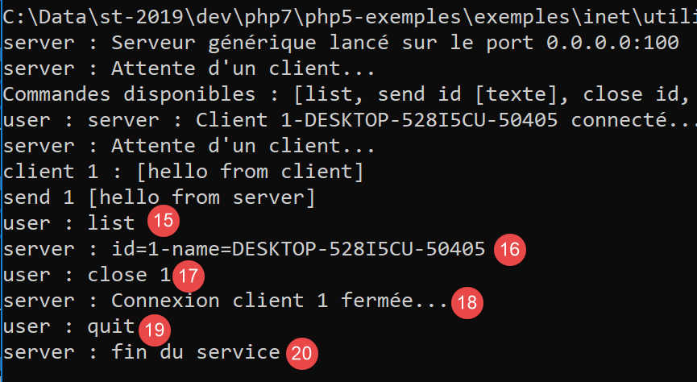
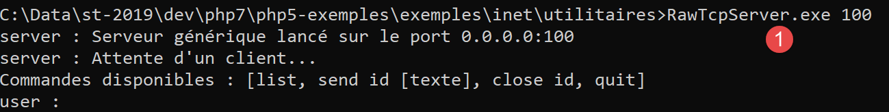
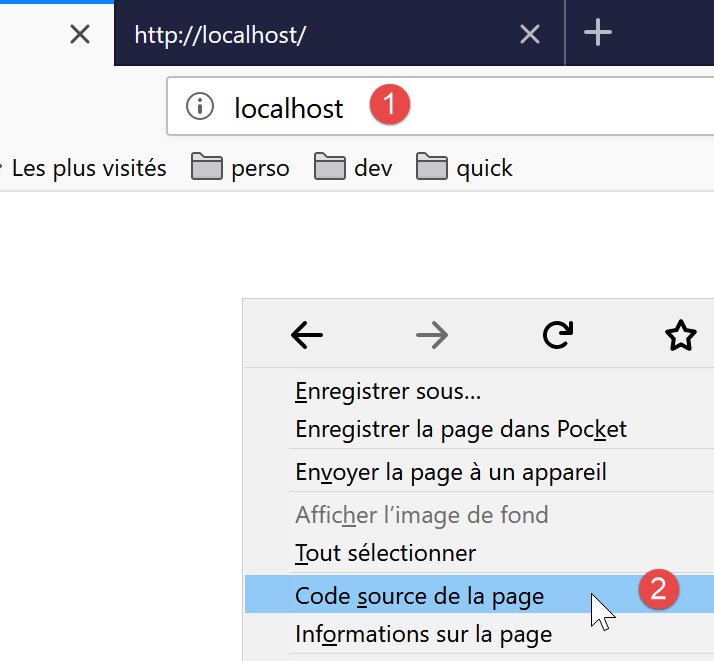
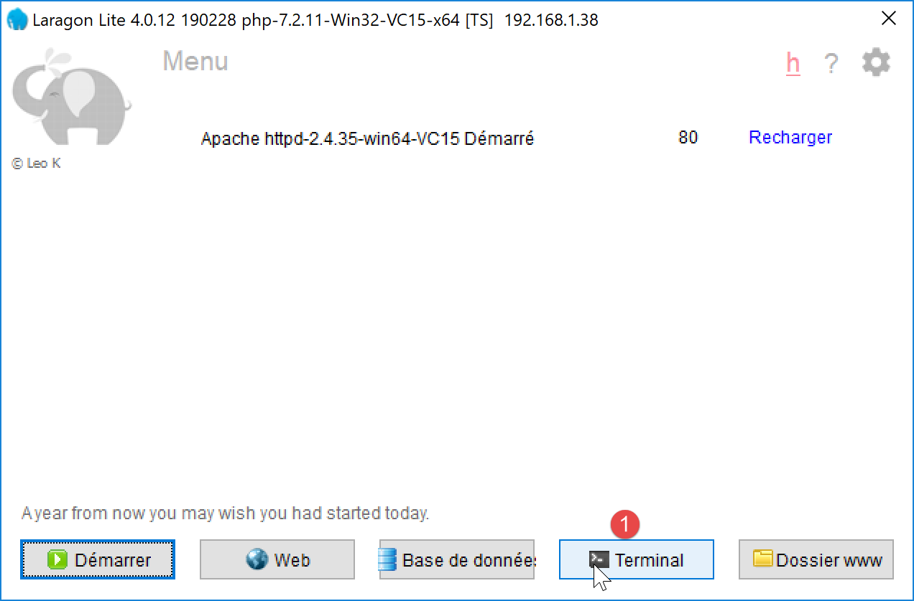
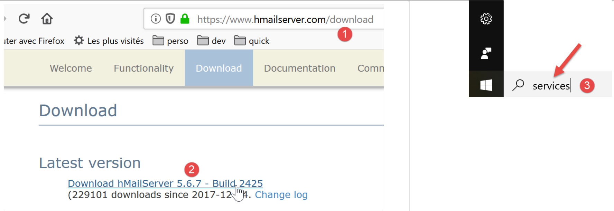
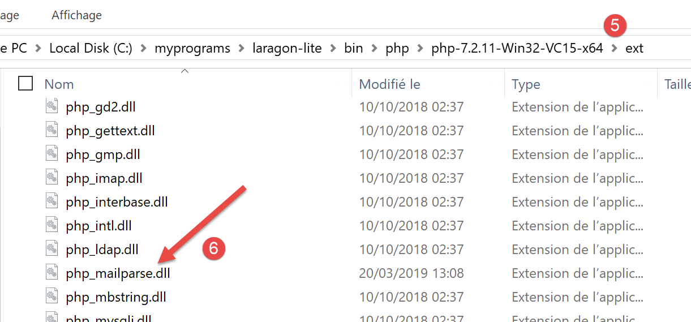
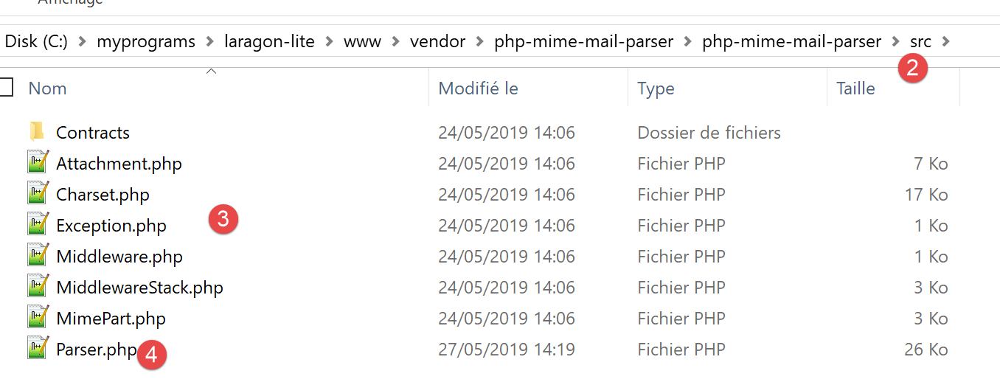

16. Funciones de red
A continuación, analizaremos las funciones de red de PHP, que nos permiten realizar programación TCP/IP (Protocolo de control de transmisión/Protocolo de Internet).

16.1. Conceptos básicos de la programación de Internet
16.1.1. Descripción general
Consideremos la comunicación entre dos máquinas remotas, A y B:

Cuando una aplicación AppA en el equipo A quiere comunicarse con una aplicación AppB en el equipo B a través de Internet, debe saber varias cosas:
- la dirección IP (Protocolo de Internet) o el nombre de la máquina B;
- el número de puerto utilizado por la aplicación AppB. De hecho, la máquina B puede alojar muchas aplicaciones que se ejecutan en Internet. Cuando recibe información de la red, debe saber a qué aplicación va dirigida dicha información. Las aplicaciones de la máquina B acceden a la red a través de interfaces también conocidas como puertos de comunicación. Esta información está contenida en el paquete recibido por la máquina B para que pueda entregarse a la aplicación correcta;
- los protocolos de comunicación que entiende la máquina B. En nuestro estudio, utilizaremos únicamente protocolos TCP-IP;
- el protocolo de comunicación compatible con la aplicación AppB. De hecho, las máquinas A y B se «comunicarán» entre sí. Lo que intercambien quedará encapsulado dentro de los protocolos TCP/IP. Sin embargo, cuando, al final de la cadena, la aplicación AppB reciba la información enviada por la aplicación AppA, deberá ser capaz de interpretarla. Esto es análogo a la situación en la que dos personas, A y B, se comunican por teléfono: su conversación se transmite a través del teléfono. El habla es codificada como una serie de señales por el teléfono A, transmitida a través de las líneas telefónicas, y llega al teléfono B para ser decodificada . La persona B oye entonces el habla. Aquí es donde entra en juego el concepto de protocolo de comunicación: si A habla francés y B no entiende ese idioma, A y B no podrán comunicarse de forma efectiva;
Por lo tanto, las dos aplicaciones que se comunican deben ponerse de acuerdo sobre el tipo de diálogo que utilizarán. Por ejemplo, el diálogo con un servicio FTP no es el mismo que con un servicio POP: estos dos servicios no aceptan los mismos comandos. Tienen un protocolo de diálogo diferente;
16.1.2. Características del protocolo TCP
En este apartado, solo analizaremos las comunicaciones de red que utilizan el protocolo de transporte TCP, cuyas principales características son las siguientes:
- El proceso que desea transmitir datos establece primero una conexión con el proceso que recibirá la información que está a punto de transmitir. Esta conexión se establece entre un puerto de la máquina emisora y un puerto de la máquina receptora. De este modo, se crea una ruta virtual entre los dos puertos, que quedará reservada exclusivamente para los dos procesos que han establecido la conexión;
- Todos los paquetes enviados por el proceso de origen siguen esta ruta virtual y llegan en el orden en que fueron enviados;
- la información transmitida parece continua. El proceso emisor envía información a su propio ritmo. Esta información no se envía necesariamente de forma inmediata: el protocolo TCP espera hasta tener suficiente para enviar. Se almacena en una estructura denominada segmento TCP. Una vez que este segmento está lleno, se transmite a la capa IP, donde se encapsula en un paquete IP;
- Cada segmento enviado por el protocolo TCP está numerado. El protocolo TCP receptor verifica que está recibiendo los segmentos en secuencia. Por cada segmento recibido correctamente, envía un acuse de recibo al remitente;
- Cuando el remitente recibe este acuse, lo notifica al proceso de envío. De este modo, el proceso de envío puede confirmar que un segmento ha llegado correctamente;
- si, tras un cierto tiempo, el protocolo TCP que envió un segmento no recibe un acuse de recibo, vuelve a transmitir el segmento en cuestión, garantizando así la calidad del servicio de entrega de la información;
- el circuito virtual establecido entre los dos procesos que se comunican es full-duplex: esto significa que la información puede fluir en ambas direcciones. Así, el proceso de destino puede enviar acuses de recibo incluso mientras el proceso de origen sigue enviando información. Esto permite, por ejemplo, que el protocolo TCP de origen envíe múltiples segmentos sin esperar un acuse de recibo. Si, tras un cierto tiempo, se da cuenta de que no ha recibido un acuse de recibo para un segmento específico n.º n, reanudará el envío de segmentos a partir de ese punto;
16.1.3. La relación cliente-servidor
La comunicación a través de Internet suele ser asimétrica: la máquina A inicia una conexión para solicitar un servicio a la máquina B, especificando que desea establecer una conexión con el servicio SB1 en la máquina B. La máquina B puede aceptar o rechazar la solicitud. Si la acepta, la máquina A puede enviar sus solicitudes al servicio SB1. Estas solicitudes deben cumplir con el protocolo de comunicación que entiende el servicio SB1. De este modo, se establece un diálogo de solicitud-respuesta entre la máquina A, conocida como máquina cliente, y la máquina B, conocida como máquina servidor. Uno de los dos interlocutores cerrará la conexión.
16.1.4. Arquitectura del cliente
La arquitectura de un programa de red que solicita los servicios de una aplicación de servidor será la siguiente:
ouvrir la connexion avec le service SB1 de la machine B
si réussite alors
tant que ce n'est pas fini
préparer une demande
l'émettre vers la machine B
attendre et récupérer la réponse
la traiter
fin tant que
finsi
fermer la connexion
16.1.5. Arquitectura del servidor
La arquitectura de un programa que ofrece servicios será la siguiente:
ouvrir le service sur la machine locale
tant que le service est ouvert
se mettre à l'écoute des demandes de connexion sur un port dit port d'écoute
lorsqu'il y a une demande, la faire traiter par une autre tâche sur un autre port dit port de service
fin tant que
El programa servidor gestiona la solicitud de conexión inicial de un cliente de forma diferente a sus solicitudes posteriores de servicio. El programa no proporciona el servicio por sí mismo. Si lo hiciera, dejaría de estar a la escucha de solicitudes de conexión mientras el servicio estuviera en curso, y los clientes no serían atendidos. Por lo tanto, procede de otra manera: tan pronto como se recibe una solicitud de conexión en el puerto de escucha y esta es aceptada, el servidor crea una tarea encargada de proporcionar el servicio solicitado por el cliente. Este servicio se proporciona en otro puerto de la máquina del servidor denominado «puerto de servicio». Esto permite atender a varios clientes al mismo tiempo.
Una tarea de servicio tendrá la siguiente estructura:
tant que le service n'a pas été rendu totalement
attendre une demande sur le port de service
lorsqu'il y en a une, élaborer la réponse
transmettre la réponse via le port de service
fin tant que
libérer le port de service
16.2. Aprende sobre los protocolos de comunicación de Internet
16.2.1. Introducción
Cuando un cliente se conecta a un servidor, se establece un diálogo entre ambos. La naturaleza de este diálogo constituye lo que se conoce como el protocolo de comunicación del servidor. Entre los protocolos de Internet más comunes se encuentran los siguientes:
- HTTP: Protocolo de Transferencia de Hipertexto – el protocolo utilizado para comunicarse con un servidor web (servidor HTTP);
- SMTP: Protocolo simple de transferencia de correo (Simple Mail Transfer Protocol): el protocolo para comunicarse con un servidor de envío de correo electrónico (servidor SMTP);
- POP: Protocolo de oficina postal (Post Office Protocol): el protocolo para comunicarse con un servidor de almacenamiento de correo electrónico (servidor POP). Se utiliza para recuperar los correos electrónicos recibidos, no para enviarlos;
- IMAP: Protocolo de acceso a mensajes de Internet: el protocolo para comunicarse con un servidor de almacenamiento de correo electrónico (servidor IMAP). Este protocolo ha sustituido gradualmente al antiguo protocolo POP;
- FTP: Protocolo de transferencia de archivos —el protocolo para comunicarse con un servidor de almacenamiento de archivos (servidor FTP);
Todos estos protocolos son de texto: el cliente y el servidor intercambian líneas de texto. Si tienes un cliente capaz de:
- establecer una conexión con un servidor TCP;
- mostrar en la consola las líneas de texto enviadas por el servidor;
- enviar al servidor las líneas de texto que un usuario escribiría en el teclado;
entonces podremos comunicarnos con un servidor TCP utilizando un protocolo basado en texto, siempre que conozcamos las reglas de dicho protocolo.
16.2.2. Utilidades TCP

En el código asociado a este documento, hay dos utilidades de comunicación TCP:
- [RawTcpClient] permite conectarse al puerto P de un servidor S;
- [RawTcpServer] crea un servidor que escucha a los clientes en el puerto P;
El servidor TCP [RawTcpServer] se invoca utilizando la sintaxis [RawTcpServer puerto] para crear un servicio TCP en el puerto [puerto] de la máquina local (el ordenador en el que estás trabajando):
- el servidor puede atender a varios clientes simultáneamente;
- el servidor ejecuta los comandos que el usuario escribe en el teclado. Estos son los siguientes:
- list: muestra una lista de los clientes conectados actualmente al servidor. Se muestran en el formato [id=x-name=y]. El campo [id] se utiliza para identificar a los clientes;
- send x [texto]: envía texto al cliente n.º x (id=x). Los corchetes [] no se envían. Son obligatorios en el comando. Se utilizan para delimitar visualmente el texto enviado al cliente;
- close x: cierra la conexión con el cliente n.º x;
- quit: cierra todas las conexiones y detiene el servicio;
- Las líneas enviadas por el cliente al servidor se muestran en la consola;
- Todos los intercambios se registran en un archivo de texto llamado [machine-portService.txt], donde
- [máquina] es el nombre de la máquina en la que se ejecuta el código;
- [port] es el puerto de servicio que responde a las solicitudes de los clientes;
El cliente TCP [RawTcpClient] se invoca utilizando la sintaxis [RawTcpClient servidor puerto] para conectarse al puerto [puerto] del servidor [servidor]:
- las líneas escritas por el usuario en el teclado se envían al servidor;
- las líneas enviadas por el servidor se muestran en la consola;
- Toda la comunicación se registra en un archivo de texto llamado [server-port.txt];
Veamos un ejemplo. Abre dos ventanas del Símbolo del sistema de Windows y accede a la carpeta «utilities» en cada una de ellas. En una de las ventanas, inicia el servidor [RawTcpServer] en el puerto 100:

- en [1], estamos en la carpeta de utilidades;
- en [2], iniciamos el servidor TCP en el puerto 100;
- en [3], el servidor espera a un cliente TCP;
- en [4], el servidor espera a que el usuario introduzca un comando mediante el teclado;
En la otra ventana de comandos, iniciamos el cliente TCP:

- En [5], estamos en la carpeta de utilidades;
- en [6], iniciamos el cliente TCP: le indicamos que se conecte al puerto 100 de la máquina local (en la que estás trabajando);
- en [7], el cliente se ha conectado correctamente al servidor. Se muestran los detalles del cliente: está en la máquina [DESKTOP-528I5CU] (la máquina local en este ejemplo) y utiliza el puerto [50405] para comunicarse con el servidor:
- En [8], el cliente está esperando un comando introducido por el usuario a través del teclado;
Volvamos a la ventana del servidor. Su contenido ha cambiado:

- En [9], se ha detectado un cliente. El servidor le ha asignado el número 1. El servidor ha identificado correctamente al cliente remoto (máquina y puerto);
- en [10], el servidor vuelve a esperar a un nuevo cliente;
Volvamos a la ventana del cliente y enviemos un comando al servidor:

- en [11], el comando enviado al servidor;
Volvamos a la ventana del servidor. Su contenido ha cambiado:

- en [12], entre corchetes, el mensaje recibido por el servidor;
Enviemos una respuesta al cliente:

- en [13], la respuesta enviada al cliente 1. Solo se envía el texto entre corchetes, no los corchetes en sí;
Volvamos a la ventana del cliente:

- en [14], la respuesta recibida por el cliente. El texto recibido es el que aparece entre corchetes;
Volvamos a la ventana del servidor para ver otros comandos:

- en [15], solicitamos la lista de clientes;
- en [16], la respuesta;
- en [17], cerramos la conexión con el cliente n.º 1;
- en [18], la confirmación del servidor;
- en [19], apagamos el servidor;
- en [20], la confirmación del servidor;
Volvamos a la ventana del cliente:

- en [21], el cliente ha detectado el fin del servicio;
Se han creado dos archivos de registro, uno para el servidor y otro para el cliente:

- En [25], el servidor registra: el nombre del archivo es el nombre del cliente [máquina-puerto];
- en [26], el cliente registra: el nombre del archivo es el nombre del servidor [máquina-puerto];
Los registros del servidor son los siguientes:
Los registros del cliente son los siguientes:
16.3. Cómo encontrar el nombre o la dirección IP de un ordenador en Internet

Los ordenadores en Internet se identifican mediante una dirección IP (IPv4 o IPv6) y, en la mayoría de los casos, mediante un nombre. Sin embargo, en última instancia solo se utiliza la dirección IP. Por lo tanto, a veces es necesario conocer la dirección IP de un ordenador identificado por su nombre.
El script [ip-01.php] es el siguiente:
<?php
// strict adherence to declared function parameter types
declare (strict_types=1);
//
// error management
error_reporting(E_ALL & E_STRICT);
ini_set("display_errors", "on");
//
// constants
$HOTES = array("istia.univ-angers.fr", "www.univ-angers.fr", "www.ibm.com", "localhost", "", "xx");
// IP addresses and $HOTES machine names
for ($i = 0; $i < count($HOTES); $i++) {
getIPandName($HOTES[$i]);
}
// end
print "Terminé\n";
exit;
//------------------------------------------------
function getIPandName(string $nomMachine): void {
//$nomMachine: name of the machine whose address is required IP: name of the machine whose address is required IP: name of the machine whose address is required
//
// nomMachine-->adresse IP
$ip = gethostbyname($nomMachine);
print "---------------\n";
if ($ip !== $nomMachine) {
print "ip[$nomMachine]=$ip\n";
// address IP --> nomMachine
$name = gethostbyaddr($ip);
if ($name !== $ip) {
print "name[$ip]=$name\n";
} else {
print "Erreur, machine[$ip] non trouvée\n";
}
} else {
print "Erreur, machine[$nomMachine] non trouvée\n";
}
}
Comentarios
- líneas 7-8: indicamos a PHP que informe de todos los errores (E_ALL y E_STRICT) y los muestre. Este modo solo se recomienda en el modo de desarrollo para mejorar el código utilizando las advertencias de PHP. En el modo de producción, en la línea 8, lo desactivaríamos. Desde PHP 5.4, el nivel E_STRICT está incluido en E_ALL;
- Línea 11: La lista de máquinas de las que queremos obtener el nombre y la dirección IP;
Las funciones de red de PHP se utilizan en la función getIpandName de la línea 21.
- línea 25: la función gethostbyname($name) recupera la dirección IP «ip3.ip2.ip1.ip0» del equipo denominado $name. Si el equipo $name no existe, la función devuelve $name como resultado;
- Línea 30: La función gethostbyaddr($ip) recupera el nombre de la máquina asociado a la dirección IP $ip en el formato «ip3.ip2.ip1.ip0». Si la máquina $ip no existe, la función devuelve $ip como resultado;
Resultados:
---------------
ip[istia.univ-angers.fr]=193.49.144.41
name[193.49.144.41]=ametys-fo-2.univ-angers.fr
---------------
ip[www.univ-angers.fr]=193.49.144.41
name[193.49.144.41]=ametys-fo-2.univ-angers.fr
---------------
ip[www.ibm.com]=2.18.220.211
name[2.18.220.211]=a2-18-220-211.deploy.static.akamaitechnologies.com
---------------
ip[localhost]=127.0.0.1
name[127.0.0.1]=DESKTOP-528I5CU
---------------
ip[]=192.168.1.38
name[192.168.1.38]=DESKTOP-528I5CU.home
---------------
Erreur, machine[xx] non trouvée
Terminé
16.4. El HTTP (Protocolo de Transferencia de Hipertexto)
16.4.1. Ejemplo 1

Cuando un navegador muestra una URL, actúa como cliente de un servidor web o, en otras palabras, de un servidor HTTP. Toma la iniciativa y comienza enviando una serie de comandos al servidor. Para este primer ejemplo:
- el servidor será la utilidad [RawTcpServer];
- el cliente será un navegador;
En primer lugar, iniciamos el servidor en el puerto 100:

A continuación, utilizando un navegador, solicitamos la URL [localhost:100], lo que significa que especificamos que el servidor HTTP al que estamos enviando la solicitud se está ejecutando en el puerto 100 de la máquina local:

Volvamos a la ventana del servidor:

- en [3], el cliente que se ha conectado;
- en [4-7], la serie de líneas de texto que envió:
- en [4]: esta línea tiene el formato [GET URL HTTP/1.1]. Solicita la URL / e indica al servidor que utilice el protocolo HTTP 1.1;
- en [5]: esta línea tiene el formato [Host: servidor:puerto]. No importa si el comando [Host] se escribe en mayúsculas o minúsculas. Obsérvese que el cliente está consultando un servidor local que opera en el puerto 100;
- el comando [User-Agent] identifica al cliente;
- el comando [Accept] especifica qué tipos de documentos acepta el cliente;
- El comando [Accept-Language] especifica el idioma en el que se desean los documentos solicitados, en caso de que existan en varios idiomas;
- el comando [Connection] especifica el modo de conexión deseado: [keep-alive] indica que la conexión debe mantenerse hasta que se complete el intercambio;
- en [7]: el cliente termina sus comandos con una línea en blanco;
Terminamos la conexión apagando el servidor:

16.4.2. Ejemplo 2
Ahora que conocemos los comandos que envía un navegador para solicitar una URL, solicitaremos esta URL utilizando nuestro cliente TCP [RawTcpClient]. El servidor Apache de Laragon será nuestro servidor web.
Iniciemos Laragon y, a continuación, el servidor web Apache:


Ahora, utilizando un navegador, solicitemos la URL [http://localhost:80]. Aquí solo especificamos el servidor [localhost:80] y ninguna URL de documento. En este caso, se solicita la URL /, es decir, la raíz del servidor web:

- en [1], la URL solicitada. Inicialmente escribimos [http://localhost:80], y el navegador (Firefox en este caso) simplemente la convirtió en [localhost] porque el protocolo [http] se sobreentiende cuando no se especifica ningún protocolo, y el puerto [80] se sobreentiende cuando no se especifica el puerto;
- en [2], la página raíz / del servidor web consultado;
Ahora, veamos el texto recibido por el navegador:

- Haz clic con el botón derecho del ratón en la página y selecciona la opción [2]. Verás el siguiente código fuente:
<!DOCTYPE HTML>
<HTML>
<head>
<title>Laragon</title>
<link href="https://fonts.googleapis.com/css?family=Karla:400" rel="stylesheet" type="text/css">
<style>
HTML, body {
height: 100%;
}
body {
margin: 0;
padding: 0;
width: 100%;
display: table;
font-weight: 100;
font-family: 'Karla';
}
.container {
text-align: center;
display: table-cell;
vertical-align: middle;
}
.content {
text-align: center;
display: inline-block;
}
.title {
font-size: 96px;
}
.opt {
margin-top: 30px;
}
.opt a {
text-decoration: none;
font-size: 150%;
}
a:hover {
color: red;
}
</style>
</head>
<body>
<div class="container">
<div class="content">
<div class="title" title="Laragon">Laragon</div>
<div class="info"><br />
Apache/2.4.35 (Win64) OpenSSL/1.1.0i PHP/7.2.11<br />
PHP version: 7.2.11 <span><a title="phpinfo()" href="/?q=info">info</a></span><br />
Document Root: C:/myprograms/laragon-lite/www<br />
</div>
<div class="opt">
<div><a title="Getting Started" href="https://laragon.org/docs">Getting Started</a></div>
</div>
</div>
</div>
</body>
</HTML>
Ahora solicitemos la URL [http://localhost:80] utilizando nuestro cliente TCP:

- En [1], nos conectamos al puerto 80 del servidor localhost. Aquí es donde se ejecuta el servidor web Laragon;
Ahora escribimos los comandos que hemos visto en el párrafo anterior:

- en [1], el comando [GET]. Solicitamos el directorio raíz / del servidor web;
- en [2], el comando [Host];
- estos son los únicos dos comandos esenciales. Para los demás comandos, el servidor web utilizará los valores predeterminados;
- en [3], la línea en blanco que debe cerrar los comandos del cliente;
- debajo de la línea 3 viene la respuesta del servidor web;
- en [4] hasta la línea en blanco [5] se encuentran los encabezados HTTP de la respuesta del servidor;
- después de la línea [5] viene el documento HTML solicitado [6];
Escribimos [quit] para salir del cliente y descargamos el archivo de registro [localhost-80.txt]:
- Líneas 11–79: el documento HTML recibido. En el ejemplo anterior, Firefox recibió el mismo;
Ahora tenemos los conceptos básicos para programar un cliente TCP que solicite una URL.
16.4.3. Ejemplo 3

El script [http-01.php] es un cliente HTTP configurado por el archivo JSON [config-http-01.json]. El contenido del archivo es el siguiente:
- línea 2: el nombre del equipo que aloja el servidor web al que se quiere acceder;
- línea 3: el puerto en el que opera este servidor web;
- línea 4: la URL del documento deseado;
- línea 5: la máquina de destino en el formato máquina:puerto;
- línea 6: la identificación del cliente HTTP: puedes introducir lo que quieras;
- línea 7: el tipo de documento aceptado por el cliente, en este caso texto HTML;
- línea 8: el idioma deseado para el documento solicitado;
- línea 9: el carácter de fin de línea para los comandos enviados por el cliente: puede variar dependiendo de si el servidor se ejecuta en una máquina Unix (\n) o en una máquina Windows (\r\n);
El script [http-01.php] es el siguiente:
<?php
// strict adherence to declared types of function parameters
declare (strict_types=1);
//
// error management
// error_reporting(E_ALL & E_STRICT);
// ini_set("display_errors", "on");
//
// constants
const CONFIG_FILE_NAME = "config-http-01.json";
//
// we retrieve the configuration
$config = \json_decode(\file_get_contents(CONFIG_FILE_NAME), true);
// otain the HTML text from the URL configuration file
foreach ($config as $site => $protocole) {
// read site index page $ite
$résultat = getURL($site, $protocole);
// result display
print "$résultat\n";
}//for
// end
exit;
//-----------------------------------------------------------------------
function getURL(string $site, array $protocole, $suivi = TRUE): string {
// reads the URL $site["GET"] and stores it in the $site.HTML file
// client/server dialog is based on the $protocole protocol
//
// open a connection on the $site port
$erreurNumber = 0;
$erreur = "";
$connexion = fsockopen($site, $protocole["port"], $erreurNumber, $erreur);
// return if error
if ($connexion === FALSE) {
return "Echec de la connexion au site (" . $site . " ," . $protocole["port"] . " : $erreur";
}
// $connexion represents a bidirectional communication flow
// between the client (this program) and the contacted web server
// this channel is used for the exchange of orders and information
// the dialog protocol is HTTP
//
// creation of the $site.HTML file
$HTML = fopen("output/$site.HTML", "w");
if ($HTML === FALSE) {
// close client/server connection
fclose($connexion);
// error return
return "Erreur lors de la création du fichier $site.HTML";
}
// the client will start the HTTP dialog with the server
if ($suivi) {
print "Client : début de la communication avec le serveur [$site] ----------------------------\n";
}
// depending on the server, client lines must end with \nor \r\n
$endOfLine = $protocole["endOfLine"];
// for simplicity's sake, we don't test for errors in client/server communication
// the customer sends the GET command to request the URL $protocole["GET"]
// syntax GET URL HTTP/1.1
$commande = "GET " . $protocole["GET"] . " HTTP/1.1$endOfLine";
// followed?
if ($suivi) {
print "--> $commande";
}
// send the command to the server
fputs($connexion, $commande);
// issue other headers HTTP
foreach ($protocole as $verb => $value) {
if ($verb !== "GET" && $verb != "port"" && $verb !="endOfLine") {
// we build the
$commande = "$verb: $value$endOfLine";
// followed?
if ($suivi) {
print "--> $commande";
}
// send the command to the server
fputs($connexion, $commande);
}
}
// protocol HTTP headers must end with an empty line
fputs($connexion, $endOfLine);
//
// the server will now respond on channel $connexion. It will send all
// then close the channel. The client therefore reads everything that arrives from $connexion
// until the channel closes
//
// we first read the HTTP headers sent by the server
// they also end with an empty line
if ($suivi) {
print "Réponse du serveur [$site] ----------------------------\n";
}
$fini = FALSE;
while (!$fini && $ligne = fgets($connexion, 1000)) {
// is there an empty line?
$champs = [];
preg_match("/^(.*?)\s+$/", $ligne, $champs);
if ($champs[1] !== "") {
if ($suivi) {
// header HTTP is displayed
print "<-- " . $champs[1] . "\n";
}
} else {
// this was the empty line - HTTP headers are finished
$fini = TRUE;
}
}
// we read the HTML document that will follow the empty line
while ($ligne = fgets($connexion, 1000)) {
// we save the line in the HTML file on the site
fputs($HTML, $ligne);
}
// the server has closed the connection - the client closes it in turn
fclose($connexion);
// close file $HTML
fclose($HTML);
// return
return "Fin de la communication avec le site [$site]. Vérifiez le fichier [$site.HTML]";
}
Comentarios del código:
- línea 14: el archivo de configuración se utiliza para crear un diccionario:
- las claves del diccionario son los servidores web a los que se va a consultar;
- los valores especifican el protocolo HTTP que se va a utilizar;
- líneas 16–21: recorremos la lista de servidores web de la configuración;
- Línea 26: La función getURL($site, $protocol, $log) recupera un documento del sitio web $site y lo guarda en el archivo de texto $site.HTML. Por defecto, las interacciones cliente/servidor se registran en la consola ($log=TRUE);
- Línea 33: La función fsockopen($site,$port,$errNumber,$error) establece una conexión con un servicio TCP/IP que se ejecuta en el puerto $port de la máquina $site. Si la conexión falla, [$errNumber] es un código de error y [$error] es el mensaje de error asociado. Una vez abierta la conexión cliente/servidor, muchos servicios TCP/IP intercambian líneas de texto. Este es el caso aquí con el HTTP (HyperText Transfer Protocol). El flujo de datos del servidor al cliente puede entonces tratarse como un archivo de texto leído mediante [fgets]. Lo mismo se aplica al flujo de datos del cliente al servidor, que puede escribirse mediante [fputs];
- líneas 44–50: creación del archivo [$site.HTML] en el que se almacenará el documento HTML recibido;
- línea 60: el primer comando del cliente debe ser [GET URL HTTP/1.1];
- línea 66: la función fputs permite al cliente enviar datos al servidor. En este caso, la línea de texto enviada tiene el siguiente significado: «Quiero (GET) la página [URL] del sitio web al que estoy conectado. Estoy utilizando la versión 1.1 de HTTP»;
- líneas 68–79: se envían las demás líneas del protocolo HTTP [Host, User-Agent, Accept, Accept-Language]. Su orden no importa;
- Línea 81: se envía una línea vacía al servidor para indicar que el cliente ha terminado de enviar sus encabezados HTTP y ahora está esperando el documento solicitado;
- líneas 92–106: el servidor enviará primero una serie de encabezados HTTP que proporcionan diversos detalles sobre el documento solicitado. Estos encabezados terminan con una línea en blanco;
- línea 93: se lee una línea enviada por el servidor utilizando la función PHP [fgets];
- línea 96: recuperamos el cuerpo de la línea sin los espacios (espacios en blanco, caracteres de fin de línea) al final de la línea;
- línea 97: comprobamos si hemos recuperado la línea vacía que marca el final de los encabezados HTTP enviados por el servidor;
- líneas 98–101: si estamos en modo [trace], el encabezado HTTP recibido se muestra en la consola;
- líneas 108–111: las líneas de texto de la respuesta del servidor se pueden leer línea por línea utilizando un bucle while y guardarse en el archivo de texto [output/$site.HTML]. Cuando el servidor web ha enviado toda la página solicitada, cierra su conexión con el cliente. En el lado del cliente, esto se detectará como un fin de archivo;
Resultados:
La consola muestra los siguientes registros:
Client : début de la communication avec le serveur [localhost] ----------------------------
--> GET / HTTP/1.1
--> Host: localhost:80
--> User-Agent: client PHP
--> Accept: text/HTML
--> Accept-Language: fr
Réponse du serveur [localhost] ----------------------------
<-- HTTP/1.1 200 OK
<-- Date: Thu, 16 May 2019 15:43:18 GMT
<-- Server: Apache/2.4.35 (Win64) OpenSSL/1.1.0i PHP/7.2.11
<-- X-Powered-By: PHP/7.2.11
<-- Content-Length: 1781
<-- Content-Type: text/HTML; charset=UTF-8
Fin de la communication avec le site [localhost]. Vérifiez le fichier [localhost.HTML]
En nuestro ejemplo, el archivo [output/localhost.HTML] recibido es el siguiente:
<!DOCTYPE HTML>
<HTML>
<head>
<title>Laragon</title>
<link href="https://fonts.googleapis.com/css?family=Karla:400" rel="stylesheet" type="text/css">
<style>
HTML, body {
height: 100%;
}
body {
margin: 0;
padding: 0;
width: 100%;
display: table;
font-weight: 100;
font-family: 'Karla';
}
.container {
text-align: center;
display: table-cell;
vertical-align: middle;
}
.content {
text-align: center;
display: inline-block;
}
.title {
font-size: 96px;
}
.opt {
margin-top: 30px;
}
.opt a {
text-decoration: none;
font-size: 150%;
}
a:hover {
color: red;
}
</style>
</head>
<body>
<div class="container">
<div class="content">
<div class="title" title="Laragon">Laragon</div>
<div class="info"><br />
Apache/2.4.35 (Win64) OpenSSL/1.1.0i PHP/7.2.11<br />
PHP version: 7.2.11 <span><a title="phpinfo()" href="/?q=info">info</a></span><br />
Document Root: C:/myprograms/laragon-lite/www<br />
</div>
<div class="opt">
<div><a title="Getting Started" href="https://laragon.org/docs">Getting Started</a></div>
</div>
</div>
</div>
</body>
</HTML>
Efectivamente, obtuvimos el mismo documento que con el navegador Firefox.
16.4.4. Ejemplo 4
En este ejemplo, demostraremos que el cliente HTTP que hemos escrito es insuficiente. Modifica el archivo de configuración [config-http-01.json] de la siguiente manera:
Aquí, solicitaremos la URL [http://tahe.developpez.com:443/]. El puerto 443 de la máquina [tahe.developpez.com] es un puerto utilizado para el protocolo HTTP seguro conocido como HTTPS. En este protocolo, la interacción cliente-servidor comienza con un intercambio de información que asegura la conexión. Por lo tanto, el cliente debe utilizar el protocolo [HTTPS] en lugar del protocolo [HTTP], lo cual nuestro cliente no hace.
Con este archivo de configuración, la salida de la consola es la siguiente:
Client : début de la communication avec le serveur [tahe.developpez.com] ----------------------------
--> GET / HTTP/1.1
--> Host: sergetahe.com:443
--> User-Agent: script PHP 7
--> Accept: text/HTML
--> Accept-Language: fr
Réponse du serveur [tahe.developpez.com] ----------------------------
<-- HTTP/1.1 400 Bad Request
<-- Date: Fri, 17 May 2019 13:02:26 GMT
<-- Server: Apache/2.4.25 (Debian)
<-- Content-Length: 454
<-- Connection: close
<-- Content-Type: text/HTML; charset=iso-8859-1
Fin de la communication avec le site [tahe.developpez.com]. Vérifiez le fichier [output/tahe.developpez.com.HTML]
- línea 8: el servidor [tahe.developpez.com] respondió que la solicitud del cliente era incorrecta;
El contenido del archivo [output/tahe.developpez.com.HTML] es el siguiente:
<!DOCTYPE HTML PUBLIC "-//IETF//DTD HTML 2.0//EN">
<HTML><head>
<title>400 Bad Request</title>
</head><body>
<h1>Bad Request</h1>
<p>Your browser sent a request that this server could not understand.<br />
Reason: You're speaking plain HTTP to an SSL-enabled server port.<br />
Instead use the HTTPS scheme to access this URL, please.<br />
</p>
<hr>
<address>Apache/2.4.25 (Debian) Server at 2eurocents.developpez.com Port 443</address>
</body></HTML>
El servidor indica claramente que no hemos utilizado el protocolo correcto.
Ahora utilicemos el siguiente archivo de configuración:
La salida de la consola es la siguiente:
Client : début de la communication avec le serveur [sergetahe.com] ----------------------------
--> GET /cours-tutoriels-de-programmation/ HTTP/1.1
--> Host: sergetahe.com:80
--> User-Agent: script PHP 7
--> Accept: text/HTML
--> Accept-Language: fr
Réponse du serveur [sergetahe.com] ----------------------------
<-- HTTP/1.1 200 OK
<-- Date: Fri, 17 May 2019 13:36:06 GMT
<-- Content-Type: text/HTML; charset=UTF-8
<-- Transfer-Encoding: chunked
<-- Server: Apache
<-- X-Powered-By: PHP/7.0
<-- Vary: Accept-Encoding
<-- Set-Cookie: SERVERID68971=2621207|XN64y|XN64y; path=/
<-- Cache-control: private
<-- X-IPLB-Instance: 17106
Fin de la communication avec le site [sergetahe.com]. Vérifiez le fichier [output/sergetahe.com.HTML]
- La línea 11 indica que el servidor está enviando el documento por partes;
Esto hace que aparezcan números en el flujo de datos enviado al cliente: cada número indica al cliente el número de caracteres que contiene el siguiente fragmento enviado por el servidor. Así es como se ve en el archivo [output/sergetahe.com.HTML]:

- [1] y [2] representan el tamaño hexadecimal de los fragmentos 1 y 2 del documento;
Un cliente HTTP adecuado no debería dejar estos números en el documento HTML final.
Aquí hay otro ejemplo:
Se parece al ejemplo anterior, pero la URL solicitada en la línea 4 no termina en /. No son las mismas URL. Al ejecutar el cliente HTTP, se obtiene el siguiente resultado en la consola:
Client : début de la communication avec le serveur [sergetahe.com] ----------------------------
--> GET /cours-tutoriels-de-programmation HTTP/1.1
--> Host: sergetahe.com:80
--> User-Agent: script PHP 7
--> Accept: text/HTML
--> Accept-Language: fr
Réponse du serveur [sergetahe.com] ----------------------------
<-- HTTP/1.1 301 Moved Permanently
<-- Date: Fri, 17 May 2019 13:47:00 GMT
<-- Content-Type: text/HTML; charset=iso-8859-1
<-- Content-Length: 262
<-- Server: Apache
<-- Location: http://sergetahe.com:80/cours-tutoriels-de-programmation/
<-- Set-Cookie: SERVERID68971=2621207|XN67V|XN67V; path=/
<-- Cache-control: private
<-- X-IPLB-Instance: 17095
Fin de la communication avec le site [sergetahe.com]. Vérifiez le fichier [output/sergetahe.com.HTML]
- La línea 8 indica que el documento solicitado ha cambiado su URL. La nueva URL se indica en la línea 13. Observe que, en esta ocasión, la nueva URL termina con el carácter /;
El archivo [output/serge.tahe.com.HTML] queda entonces así:
<!DOCTYPE HTML PUBLIC "-//IETF//DTD HTML 2.0//EN">
<HTML><head>
<title>301 Moved Permanently</title>
</head><body>
<h1>Moved Permanently</h1>
<p>The document has moved <a href="http://sergetahe.com/cours-tutoriels-de-programmation/">here</a>.</p>
</body></HTML>
Un cliente HTTP debería ser capaz de seguir las redirecciones. En este caso, debería solicitar automáticamente la nueva URL [http://sergetahe.com/cours-tutoriels-de-programmation/].
16.4.5. Ejemplo 5
Los ejemplos anteriores nos han mostrado que nuestro cliente HTTP era insuficiente. Ahora presentaremos una herramienta llamada [curl] que permite recuperar documentos web al tiempo que gestiona los retos mencionados: protocolo HTTPS, documentos enviados en fragmentos, redireccionamientos… La herramienta [curl] se instaló con Laragon:

Abramos un terminal de Laragon [1]:

En la terminal, escribe el siguiente comando:

- en [1], el tipo de consola;
- en [2], el directorio actual. Este directorio es especial: es donde el servidor Apache de Laragon recupera los documentos que se le solicitan. Por lo tanto, evitaremos saturar este directorio;
- en [3], el comando introducido;
El comando [curl --help] puede generar un error. La causa más probable es que no tengas el tipo de terminal correcto. En este caso, abre otro terminal con los comandos [4-6];
El comando [curl --help] muestra todas las opciones de configuración de [curl]. Hay docenas de ellas. Utilizaremos muy pocas. Para solicitar una URL, simplemente escribe el comando [curl URL]. Este comando mostrará el documento solicitado en la consola. Si también quieres ver los intercambios HTTP entre el cliente y el servidor, escribe [curl --verbose URL]. Por último, para guardar el documento HTML solicitado en un archivo, escribe [curl --verbose --output archivo URL].
Para evitar saturar la carpeta [www] de Laragon, cambiemos a otra ubicación del sistema de archivos:

- en [1], ve a la carpeta [c:\temp]. Si esta carpeta no existe, puedes crearla o elegir otra;
- en [2], crea una carpeta llamada [curl];
- en [3], ve a ella;
- en [4], muestra su contenido. Está vacía;
Asegúrate de que el servidor Apache de Laragon está en ejecución y, utilizando [curl], solicita la URL [http://localhost/] con el comando [curl –verbose –output localhost.HTML http://localhost/]. Obtendrás los siguientes resultados:
c:\Temp\curl
λ curl --verbose --output localhost.HTML http://localhost/
% Total % Received % Xferd Average Speed Time Time Time Current
Dload Upload Total Spent Left Speed
0 0 0 0 0 0 0 0 --:--:-- --:--:-- --:--:-- 0* Trying ::1…
* TCP_NODELAY set
* Connected to localhost (::1) port 80 (#0)
> GET / HTTP/1.1
> Host: localhost
> User-Agent: curl/7.63.0
> Accept: */*
>
< HTTP/1.1 200 OK
< Date: Fri, 17 May 2019 14:32:47 GMT
< Server: Apache/2.4.35 (Win64) OpenSSL/1.1.0i PHP/7.2.11
< X-Powered-By: PHP/7.2.11
< Content-Length: 1781
< Content-Type: text/HTML; charset=UTF-8
<
{ [1781 bytes data]
100 1781 100 1781 0 0 14248 0 --:--:-- --:--:-- --:--:-- 14248
* Connection #0 to host localhost left intact
- líneas 8-12: líneas enviadas por [curl] al servidor [localhost]. Se reconoce el protocolo HTTP;
- líneas 13–19: líneas enviadas en respuesta por el servidor;
- línea 13: indica que el documento solicitado se ha recibido correctamente;
El archivo [localhost.HTML] contiene el documento solicitado. Puede verificarlo abriendo el archivo en un editor de texto.
Ahora solicitemos la URL [https://tahe.developpez.com:443/]. Para recuperar esta URL, el cliente HTTP debe ser compatible con HTTPS. Este es el caso del cliente [curl].
La salida de la consola es la siguiente:
c:\Temp\curl
λ curl --verbose --output tahe.developpez.com.HTML https://tahe.developpez.com:443/
% Total % Received % Xferd Average Speed Time Time Time Current
Dload Upload Total Spent Left Speed
0 0 0 0 0 0 0 0 --:--:-- --:--:-- --:--:-- 0* Trying 87.98.130.52…
* TCP_NODELAY set
* Connected to tahe.developpez.com (87.98.130.52) port 443 (#0)
* ALPN, offering h2
* ALPN, offering http/1.1
* successfully set certificate verify locations:
* CAfile: C:\myprograms\laragon-lite\bin\laragon\utils\curl-ca-bundle.crt
CApath: none
} [5 bytes data]
* TLSv1.3 (OUT), TLS handshake, Client hello (1):
} [512 bytes data]
* TLSv1.3 (IN), TLS handshake, Server hello (2):
{ [108 bytes data]
* TLSv1.2 (IN), TLS handshake, Certificate (11):
{ [2558 bytes data]
* TLSv1.2 (IN), TLS handshake, Server key exchange (12):
{ [333 bytes data]
* TLSv1.2 (IN), TLS handshake, Server finished (14):
{ [4 bytes data]
* TLSv1.2 (OUT), TLS handshake, Client key exchange (16):
} [70 bytes data]
* TLSv1.2 (OUT), TLS change cipher, Change cipher spec (1):
} [1 bytes data]
* TLSv1.2 (OUT), TLS handshake, Finished (20):
} [16 bytes data]
* TLSv1.2 (IN), TLS handshake, Finished (20):
{ [16 bytes data]
* SSL connection using TLSv1.2 / ECDHE-RSA-AES128-GCM-SHA256
* ALPN, server accepted to use http/1.1
* Server certificate:
* subject: CN=*.developpez.com
* start date: Apr 4 08:25:09 2019 GMT
* expire date: Jul 3 08:25:09 2019 GMT
* subjectAltName: host "tahe.developpez.com" matched cert's "*.developpez.com"
* issuer: C=US; O=Let's Encrypt; CN=Let's Encrypt Authority X3
* SSL certificate verify ok.
} [5 bytes data]
> GET / HTTP/1.1
> Host: tahe.developpez.com
> User-Agent: curl/7.63.0
> Accept: */*
>
{ [5 bytes data]
< HTTP/1.1 200 OK
< Date: Fri, 17 May 2019 14:39:41 GMT
< Server: Apache/2.4.25 (Debian)
< X-Powered-By: PHP/5.3.29
< Vary: Accept-Encoding
< Transfer-Encoding: chunked
< Content-Type: text/HTML
<
{ [6 bytes data]
100 96559 0 96559 0 0 163k 0 --:--:-- --:--:-- --:--:-- 163k
* Connection #0 to host tahe.developpez.com left intact
- líneas 10-40: intercambios entre el cliente y el servidor para proteger la conexión: esta se cifrará;
- líneas 42-45: los encabezados HTTP enviados por el cliente [curl] al servidor;
- línea 48: se ha encontrado el documento solicitado;
- línea 53: el documento se envía por partes;
[curl] gestiona correctamente tanto el protocolo seguro HTTPS como el hecho de que el documento se envía por partes. El documento enviado se puede encontrar aquí, en el archivo [tahe.developpez.com.HTML].
Ahora solicitemos la URL [http://sergetahe.com/cours-tutoriels-de-programmation]. Vimos que, para esta URL, había una redirección a la URL [http://sergetahe.com/cours-tutoriels-de-programmation/] (con una / al final).
La salida de la consola es la siguiente:
c:\Temp\curl
λ curl --verbose --output sergetahe.com.HTML --location http://sergetahe.com/cours-tutoriels-de-programmation
% Total % Received % Xferd Average Speed Time Time Time Current
Dload Upload Total Spent Left Speed
0 0 0 0 0 0 0 0 --:--:-- --:--:-- --:--:-- 0* Trying 87.98.154.146…
* TCP_NODELAY set
* Connected to sergetahe.com (87.98.154.146) port 80 (#0)
> GET /cours-tutoriels-de-programmation HTTP/1.1
> Host: sergetahe.com
> User-Agent: curl/7.63.0
> Accept: */*
>
< HTTP/1.1 301 Moved Permanently
< Date: Fri, 17 May 2019 15:13:03 GMT
< Content-Type: text/HTML; charset=iso-8859-1
< Content-Length: 262
< Server: Apache
< Location: http://sergetahe.com/cours-tutoriels-de-programmation/
< Set-Cookie: SERVERID68971=2621207|XN7Pg|XN7Pg; path=/
< Cache-control: private
< X-IPLB-Instance: 17095
<
* Ignoring the response-body
{ [262 bytes data]
100 262 100 262 0 0 1401 0 --:--:-- --:--:-- --:--:-- 1401
* Connection #0 to host sergetahe.com left intact
* Issue another request to this URL: 'http://sergetahe.com/cours-tutoriels-de-programmation/'
* Found bundle for host sergetahe.com: 0x1c88548 [can pipeline]
* Could pipeline, but not asked to!
* Re-using existing connection! (#0) with host sergetahe.com
* Connected to sergetahe.com (87.98.154.146) port 80 (#0)
0 0 0 0 0 0 0 0 --:--:-- --:--:-- --:--:-- 0
> GET /cours-tutoriels-de-programmation/ HTTP/1.1
> Host: sergetahe.com
> User-Agent: curl/7.63.0
> Accept: */*
>
< HTTP/1.1 200 OK
< Date: Fri, 17 May 2019 15:13:04 GMT
< Content-Type: text/HTML; charset=UTF-8
< Transfer-Encoding: chunked
< Server: Apache
< X-Powered-By: PHP/7.0
< Vary: Accept-Encoding
< Set-Cookie: SERVERID68971=2621207|XN7Pg|XN7Pg; path=/
< Cache-control: private
< X-IPLB-Instance: 17095
<
{ [14205 bytes data]
100 43101 0 43101 0 0 78795 0 --:--:-- --:--:-- --:--:-- 168k
* Connection #0 to host sergetahe.com left intact
- línea 2: la opción [--location] se utiliza para indicar que queremos seguir las redirecciones enviadas por el servidor;
- línea 13: el servidor indica que el documento solicitado ha cambiado su URL;
- línea 18: indica la nueva URL del documento solicitado;
- línea 27: [curl] envía una nueva solicitud a la nueva URL;
- línea 33: se utiliza la nueva URL;
- línea 38: el servidor responde que ha encontrado el documento solicitado;
- línea 41: lo envía por partes;
El documento solicitado se encontrará en el archivo [sergetahe.com.HTML].
16.4.6. Ejemplo 6
PHP cuenta con una extensión llamada [libcurl] que permite utilizar las capacidades de la herramienta [curl] en un programa PHP. En primer lugar, asegúrate de que esta extensión esté habilitada en el archivo [php.ini], tal y como se describe en la sección de enlaces:

Asegúrate de que la línea 889 anterior no esté comentada.
Escribiremos un script [http-02.php] que utilizará el siguiente archivo de configuración JSON:
Cada entrada [clave, valor] del diccionario tiene la siguiente estructura:
- clave: el nombre de un servidor web;
- valor: un diccionario con las siguientes claves:
- timeout: tiempo máximo de espera para la respuesta del servidor. Transcurrido este tiempo, el cliente se desconectará;
- url: URL del documento solicitado;
El código del script [http-02.php] es el siguiente:
<?php
// strict adherence to declared types of function parameters
declare (strict_types=1);
//
// error management
//error_reporting(E_ALL & E_STRICT);
//ini_set("display_errors", "on");
//
// constants
const CONFIG_FILE_NAME = "config-http-02.json";
//
// we retrieve the configuration
$config = \json_decode(\file_get_contents(CONFIG_FILE_NAME), true);
// get the HTML text from the URL in the configuration file
foreach ($config as $site => $infos) {
// reading URL from site $ite
$résultat = getUrl($site, $infos["url"], $infos["timeout"]);
// result display
print "$résultat\n";
}//for
// end
exit;
//-----------------------------------------------------------------------
function getUrl(string $site, string $url, int $timeout, $suivi = TRUE): string {
// reads the URL $url and stores it in the file output/$site.HTML
//
// follow-up
print "Client : début de la communication avec le serveur [$site] ----------------------------\n";
// Session initialization cURL
$curl = curl_init($url);
if ($curl === FALSE) {
// there has been an error
return "Erreur lors de l'initialisation de la session cURL pour le site [$site]";
}
// curl options
$options = [
// verbose mode
CURLOPT_VERBOSE => true,
// new connection - no cache
CURLOPT_FRESH_CONNECT => true,
// request timeout (in seconds)
CURLOPT_TIMEOUT => $timeout,
CURLOPT_CONNECTTIMEOUT => $timeout,
// do not check the validity of SSL certificates
CURLOPT_SSL_VERIFYPEER => false,
// track redirects
CURLOPT_FOLLOWLOCATION => true,
// retrieve the requested document as a character string
CURLOPT_RETURNTRANSFER => true
];
// curl settings
curl_setopt_array($curl, $options);
// Executing the request
$page_content = curl_exec($curl);
// Close session cURL
curl_close($curl);
// income statement
if ($page_content !== FALSE) {
// save result in $site.HTML
$result = file_put_contents("output/$site.HTML", $page_content);
if ($result === FALSE) {
// error return
return "Erreur lors de la création du fichier [output/$site.HTML]";
}
// successful comeback
return "Fin de la communication avec le serveur [$site]. Vérifiez le fichier [output/$site.HTML]";
} else {
// there has been a communication error
return "Erreur de communication avec le serveur [$site]";
}
}
Comentarios
- línea 14: utilizamos el archivo de configuración para crear el diccionario [$config];
- líneas 17–22: recorremos la lista de sitios que se encuentran en la configuración;
- línea 19: para cada sitio, llamamos a la función [getUrl], que descargará la URL $infos["url"] con un tiempo de espera de $infos["timeout"];
- línea 34: iniciamos una sesión [curl]. [curl_init] aún no se conecta al servidor web. Devuelve un recurso [$curl] que será un parámetro para todas las funciones [curl] posteriores;
- líneas 35–38: si falla la inicialización de la sesión [curl], la función [curl_init] devuelve el valor booleano FALSE;
- líneas 40–54: el diccionario [$options] configura la conexión [curl] con el servidor;
- línea 57: las opciones de conexión se pasan al recurso [$curl];
- línea 59: se conecta a la URL solicitada con las opciones definidas. Debido a la opción [CURLOPT_RETURNTRANSFER => true], la función [curl_exec] devuelve el documento enviado por el servidor como una cadena. La función [curl_exec] devuelve FALSE si la conexión falla;
- Línea 64: Analizamos el resultado de [curl_exec];
- línea 66: la página recibida se guarda en un archivo local;
- Líneas 69, 72, 75: se devuelve el resultado de la función [getUrl];
Al ejecutar el script [http-02.php], se muestra la siguiente salida en la consola:
* Rebuilt URL to: http://sergetahe.com/
Client : début de la communication avec le serveur [sergetahe.com] ----------------------------
* Trying 87.98.154.146…
* TCP_NODELAY set
* Connected to sergetahe.com (87.98.154.146) port 80 (#0)
> GET / HTTP/1.1
Host: sergetahe.com
Accept: */*
< HTTP/1.1 302 Found
< Date: Sat, 18 May 2019 08:46:38 GMT
< Content-Type: text/HTML; charset=UTF-8
< Transfer-Encoding: chunked
< Server: Apache
< X-Powered-By: PHP/7.0
< Location: http://sergetahe.com/cours-tutoriels-de-programmation
< Set-Cookie: SERVERID68971=2621236|XN/Gc|XN/Gc; path=/
< X-IPLB-Instance: 17097
<
* Ignoring the response-body
* Connection #0 to host sergetahe.com left intact
* Issue another request to this URL: 'http://sergetahe.com/cours-tutoriels-de-programmation'
* Found bundle for host sergetahe.com: 0x1fee4ebe090 [can pipeline]
* Re-using existing connection! (#0) with host sergetahe.com
* Connected to sergetahe.com (87.98.154.146) port 80 (#0)
> GET /cours-tutoriels-de-programmation HTTP/1.1
Host: sergetahe.com
Accept: */*
< HTTP/1.1 301 Moved Permanently
< Date: Sat, 18 May 2019 08:46:38 GMT
< Content-Type: text/HTML; charset=iso-8859-1
< Content-Length: 262
< Server: Apache
< Location: http://sergetahe.com/cours-tutoriels-de-programmation/
< Set-Cookie: SERVERID68971=2621236|XN/Gc|XN/Gc; path=/
< Cache-control: private
< X-IPLB-Instance: 17097
<
* Ignoring the response-body
* Connection #0 to host sergetahe.com left intact
* Issue another request to this URL: 'http://sergetahe.com/cours-tutoriels-de-programmation/'
* Found bundle for host sergetahe.com: 0x1fee4ebe090 [can pipeline]
* Re-using existing connection! (#0) with host sergetahe.com
* Connected to sergetahe.com (87.98.154.146) port 80 (#0)
> GET /cours-tutoriels-de-programmation/ HTTP/1.1
Host: sergetahe.com
Accept: */*
< HTTP/1.1 200 OK
< Date: Sat, 18 May 2019 08:46:39 GMT
< Content-Type: text/HTML; charset=UTF-8
< Transfer-Encoding: chunked
< Server: Apache
< X-Powered-By: PHP/7.0
< Link: <http://sergetahe.com/cours-tutoriels-de-programmation/wp-json/>; rel="https://api.w.org/"
< Link: <http://sergetahe.com/cours-tutoriels-de-programmation/>; rel=shortlink
< Vary: Accept-Encoding
< Set-Cookie: SERVERID68971=2621236|XN/Gc|XN/Gc; path=/
< Cache-control: private
< X-IPLB-Instance: 17097
<
Fin de la communication avec le serveur [sergetahe.com]. Vérifiez le fichier [output/sergetahe.com.HTML]
Client : début de la communication avec le serveur [tahe.developpez.com] ----------------------------
* Connection #0 to host sergetahe.com left intact
* Rebuilt URL to: https://tahe.developpez.com/
* Trying 87.98.130.52…
* TCP_NODELAY set
* Connected to tahe.developpez.com (87.98.130.52) port 443 (#0)
* ALPN, offering http/1.1
* successfully set certificate verify locations:
* CAfile: C:\myprograms\laragon-lite\etc\ssl\cacert.pem
CApath: none
* SSL connection using TLSv1.2 / ECDHE-RSA-AES128-GCM-SHA256
* ALPN, server accepted to use http/1.1
* Server certificate:
* subject: CN=*.developpez.com
* start date: Apr 4 08:25:09 2019 GMT
* expire date: Jul 3 08:25:09 2019 GMT
* subjectAltName: host "tahe.developpez.com" matched cert's "*.developpez.com"
* issuer: C=US; O=Let's Encrypt; CN=Let's Encrypt Authority X3
* SSL certificate verify ok.
> GET / HTTP/1.1
Host: tahe.developpez.com
Accept: */*
< HTTP/1.1 200 OK
< Date: Sat, 18 May 2019 08:46:42 GMT
< Server: Apache/2.4.25 (Debian)
< X-Powered-By: PHP/5.3.29
< Vary: Accept-Encoding
< Transfer-Encoding: chunked
< Content-Type: text/HTML
<
Fin de la communication avec le serveur [tahe.developpez.com]. Vérifiez le fichier [output/tahe.developpez.com.HTML]
Client : début de la communication avec le serveur [www.polytech-angers.fr] ----------------------------
* Connection #0 to host tahe.developpez.com left intact
* Rebuilt URL to: http://www.polytech-angers.fr/
* Trying 193.49.144.41…
* TCP_NODELAY set
* Connected to www.polytech-angers.fr (193.49.144.41) port 80 (#0)
> GET / HTTP/1.1
Host: www.polytech-angers.fr
Accept: */*
< HTTP/1.1 301 Moved Permanently
< Date: Sat, 18 May 2019 08:46:45 GMT
< Server: Apache/2.4.29 (Ubuntu)
< Location: http://www.polytech-angers.fr/fr/index.HTML
< Cache-Control: max-age=1
< Expires: Sat, 18 May 2019 08:46:46 GMT
< Content-Length: 339
< Content-Type: text/HTML; charset=iso-8859-1
<
* Ignoring the response-body
* Connection #0 to host www.polytech-angers.fr left intact
* Issue another request to this URL: 'http://www.polytech-angers.fr/fr/index.HTML'
* Found bundle for host www.polytech-angers.fr: 0x1fee4ebe390 [can pipeline]
* Re-using existing connection! (#0) with host www.polytech-angers.fr
* Connected to www.polytech-angers.fr (193.49.144.41) port 80 (#0)
> GET /fr/index.HTML HTTP/1.1
Host: www.polytech-angers.fr
Accept: */*
< HTTP/1.1 200
< Date: Sat, 18 May 2019 08:46:46 GMT
< Server: Apache/2.4.29 (Ubuntu)
< X-Cocoon-Version: 2.1.13-dev
< Accept-Ranges: bytes
< Last-Modified: Sat, 18 May 2019 08:01:36 GMT
< Content-Type: text/HTML; charset=UTF-8
< Content-Length: 47372
< Vary: Accept-Encoding
< Cache-Control: max-age=1
< Expires: Sat, 18 May 2019 08:46:47 GMT
< Content-Language: fr
<
* Connection #0 to host www.polytech-angers.fr left intact
Fin de la communication avec le serveur [www.polytech-angers.fr]. Vérifiez le fichier [output/www.polytech-angers.fr.HTML]
Client : début de la communication avec le serveur [localhost] ----------------------------
* Rebuilt URL to: http://localhost/
* Trying ::1…
* TCP_NODELAY set
* Connected to localhost (::1) port 80 (#0)
> GET / HTTP/1.1
Host: localhost
Accept: */*
< HTTP/1.1 200 OK
< Date: Sat, 18 May 2019 08:46:47 GMT
< Server: Apache/2.4.35 (Win64) OpenSSL/1.1.0i PHP/7.2.11
< X-Powered-By: PHP/7.2.11
< Content-Length: 1781
< Content-Type: text/HTML; charset=UTF-8
<
* Connection #0 to host localhost left intact
Fin de la communication avec le serveur [localhost]. Vérifiez le fichier [output/localhost.HTML]
Comentarios
- Obtenemos los mismos intercambios que con la herramienta [curl];
- en verde, los registros del script;
- en azul, los comandos enviados al servidor;
- en amarillo, los comandos recibidos como respuesta por el cliente;
16.4.7. Conclusión
En esta sección, hemos explorado el protocolo HTTP y hemos escrito un script [http-02.php] capaz de descargar una URL de la web.
16.5. El SMTP (Protocolo simple de transferencia de correo)
16.5.1. Introducción

En este capítulo:
- [Servidor B] será un servidor SMTP local que instalaremos;
- [Cliente A] será un cliente SMTP en diversas formas:
- el cliente [RawTcpClient] para explorar el protocolo SMTP;
- un script PHP que emula el protocolo SMTP del cliente [RawTcpClient];
- un script PHP que utiliza la biblioteca [SwiftMailServer] para enviar todo tipo de correos electrónicos;
16.5.2. Creación de una dirección de [Gmail]
Para realizar nuestras pruebas SMTP, necesitaremos una dirección de correo electrónico a la que enviar los mensajes. Para ello, crearemos una dirección en Gmail:

- en [5], creamos el usuario [php7parlexemple] (elige otro nombre);
- en [6], la contraseña será [PHP7parlexemple] (elige otra);
- En [7], confirmamos esta información;

- Rellena los campos [9-10] y luego confirma (11);
- acepte los términos de servicio de Google (12-13) y, a continuación, confirme (14);

- en [15], la bandeja de entrada del usuario [PHP7] (16);
- en [17], este usuario tiene la bandeja de entrada vacía;
- en [18-19], inicia sesión en la cuenta de Google del usuario [php7parlexemple@gmail.com]. Configuraremos la seguridad de la cuenta;

- en [21], permita que aplicaciones distintas de las de Google accedan a la cuenta [php7parlexemple]. Si no lo hace, nuestro servidor de correo local [hMailServer] no podrá comunicarse con el servidor SMTP de Gmail;

16.5.3. Configuración de un servidor SMTP
Para nuestras pruebas, instalaremos el servidor de correo [hMailServer], que actúa como servidor SMTP para enviar correos electrónicos, como servidor POP3 (Post Office Protocol) para recuperar los correos almacenados en el servidor y como servidor IMAP (Internet Message Access Protocol), que también permite recuperar los correos almacenados en el servidor, pero ofrece capacidades adicionales. En concreto, permite gestionar el almacenamiento de correo electrónico en el servidor.
El servidor de correo [hMailServer] está disponible en la URL [https://www.hmailserver.com/] (mayo de 2019).

Durante la instalación, se le solicitará cierta información:

- en [1-2], seleccione tanto el servidor de correo como las herramientas para administrarlo;
- durante la instalación, se le pedirá la contraseña de administrador: anótela, ya que la necesitará;
[hMailServer] se instala como un servicio de Windows que se inicia automáticamente al arrancar el ordenador. Es preferible elegir un inicio manual:
- En [3], escribe [servicios] en el cuadro de búsqueda de la barra de tareas;

- En [4-8], configura el servicio en modo [Manual] (6) y, a continuación, inícialo (7);
Una vez iniciado, hay que configurar [hMailServer]. El servidor se instaló con un programa de administración [hMailServer Administrator]:

- en [2], en el campo de entrada de la barra de estado, escriba [hmailserver];
- En [3], inicie el administrador;
- En [4], conecte el administrador al servidor [hMailServer];
- en [5], escribe la contraseña introducida durante la instalación de [hMailServer];

Crearemos una cuenta de usuario:
- Haga clic con el botón derecho en [Cuentas] (7) y luego en (8) para añadir un nuevo usuario;
- en la pestaña [General] (9), definimos un usuario llamado [guest] (10) con la contraseña [guest] (11). Este usuario tendrá la dirección de correo electrónico [guest@localhost] (10);
- En [12], el usuario [guest] está habilitado;


- en [15], se configura el protocolo SMTP del servidor de correo;
- en [16], configuramos el envío de correo electrónico;
- en [17], la configuración para el envío de correo electrónico a la máquina host (localhost);
- en [18], el nombre de la máquina local (localhost). El script de la sección de enlaces te permite obtener este nombre;
- en [19], configuramos un servidor de retransmisión SMTP: este es el servidor que se encargará de la distribución de los correos electrónicos no destinados a la máquina local (localhost);
- en [20], el servidor SMTP de Gmail. Utilizamos Gmail porque hemos creado una cuenta allí en la sección de enlaces;
- En [21], el puerto SMTP de Gmail;
- en [22], el servicio SMTP de Gmail es un servicio seguro: necesitas una cuenta de Gmail para acceder a él;
- en [23], el usuario [php7parlexemple] creado en la sección «enlace»;
- en [24], la contraseña de este usuario: [PHP7parlexemple], creada en la sección «enlace»;
- en [25], especifica el tipo de protocolo de seguridad utilizado por Gmail;

- en [27], el puerto del servicio SMTP;
- en [28], este servicio no requiere autenticación;
- en [30], introduzca el mensaje de bienvenida que el servidor SMTP enviará a sus clientes;
16.5.4. El protocolo SMTP

Analizaremos el protocolo SMTP utilizando el siguiente entorno:
- El cliente A será el cliente TCP genérico [RawTcpClient];
- El servidor B será el servidor de correo [hMailServer];
- El cliente A solicitará al servidor B que entregue un correo electrónico al usuario [php7parlexemple@gmail.com];
- comprobaremos que este usuario ha recibido efectivamente el correo electrónico enviado;
Iniciamos el cliente de la siguiente manera:

- en [1], nos conectamos al puerto 25 de la máquina local, donde se ejecuta el servicio SMTP de [hMailServer]. El argumento [--quit bye] indica que el usuario saldrá del programa escribiendo el comando [bye]. Sin este argumento, el comando para finalizar el programa es [quit]. Sin embargo, [quit] también es un comando del protocolo SMTP. Por lo tanto, debemos evitar esta ambigüedad;
- en [2], el cliente se ha conectado correctamente;
- en [3], el cliente está a la espera de que se introduzcan comandos desde el teclado;
- en [4], el servidor envía al cliente su mensaje de bienvenida;

- en [5], el cliente envía el comando [EHLO nombre-de-la-máquina-cliente]. El servidor responde con una serie de mensajes en el formato [250-xx] (6). El código [250] indica que el comando enviado por el cliente se ha ejecutado correctamente;
- en [7], el cliente especifica el remitente del mensaje, en este caso [guest@localhost]. Este usuario debe existir en el servidor de correo [hMailServer]. Este es el caso aquí porque hemos creado este usuario previamente;
- en [8], la respuesta del servidor;
- en [9], se indica el destinatario del mensaje, en este caso el usuario de Gmail [php7parlexemple@gmail.com];
- en [10], la respuesta del servidor;
- en [11], el comando [DATA] indica al servidor que el cliente está a punto de enviar el contenido del mensaje;
- en [12], la respuesta del servidor;
- en [13-16], el cliente debe enviar una lista de líneas de texto que termine con una línea que contenga únicamente un punto. El mensaje puede contener las líneas [Subject:, From:, To:] (13) para definir el asunto, el remitente y el destinatario del mensaje, respectivamente;
- en [14], los encabezados anteriores deben ir seguidos de una línea en blanco;
- en [15], el texto del mensaje;
- en [16], la línea que contiene únicamente un punto, lo que indica el final del mensaje;
- En [17], una vez que el servidor ha recibido la línea que contiene solo un punto, coloca el mensaje en la cola;
- en [18], el cliente indica al servidor que ha terminado;
- en [19], la respuesta del servidor;
- en [20], vemos que el servidor ha cerrado la conexión con el cliente;
Ahora comprobemos que el usuario [php7parlexemple@gmail.com] ha recibido efectivamente el mensaje:

- en [2], vemos que el usuario [php7parlexemple@gmail.com] ha recibido efectivamente el mensaje;


- en [7], el remitente del correo electrónico. Vemos que no es [guest@localhost]. Esto se debe a que el servidor de retransmisión definido en la configuración de [hMailServer] entregó el mensaje. Sin embargo, este servidor de retransmisión es [smtp.gmail.com], asociado a las credenciales del usuario de Gmail [php7parlexemple@gmail.com]. Cualquier correo electrónico procedente de [hMailServer] parecerá provenir del usuario [php7parlexemple@gmail.com]. Esto no es lo que queríamos aquí, pero si no utilizamos este servidor de retransmisión, el servicio SMTP de Gmail rechaza los correos electrónicos enviados por [hMailServer] porque el SMTP de Gmail requiere una autenticación que [hMailServer] no proporciona. Probablemente haya una forma de solucionar este problema, pero no la he encontrado;
- en [8], vemos que el correo electrónico se recibió desde la máquina [DESKTOP-528I5CU] que aloja el servidor de correo [hMailServer];
- en [9], el remitente del mensaje. Podemos ver que no es [guest@localhost];
- en [10], el remitente original del mensaje. Esta vez sí es [guest@localhost];
- en [11], el asunto;
- en [12], el destinatario;
- en [13], el mensaje;
Finalmente, nuestro [RawTcpClient] envió el mensaje con éxito a pesar de que se produjo un problema con el remitente. Ahora contamos con los fundamentos para crear un cliente SMTP escrito en PHP.
16.5.5. Un cliente SMTP básico escrito en PHP
Implementaremos en PHP lo que hemos aprendido anteriormente sobre el protocolo SMTP.

El script [smtp-01.php] se configura mediante el siguiente archivo JSON [config-smtp-01.json]:
{
"mail to localhost via localhost": {
"smtp-server": "localhost",
"smtp-port": "25",
"from": "guest@localhost",
"to": "guest@localhost",
"subject": "to localhost via localhost",
"message": "ligne 1\nligne 2\nligne 3"
},
"mail to gmail via localhost": {
"smtp-server": "localhost",
"smtp-port": "25",
"from": "guest@localhost",
"to": "php7parlexemple@gmail.com",
"subject": "to gmail via localhost",
"message": "ligne 1\nligne 2\nligne 3"
},
"mail to gmail via gmail": {
"smtp-server": "smtp.gmail.com",
"smtp-port": "587",
"from": "guest@localhost",
"to": "php7parlexemple@gmail.com",
"subject": "to gmail via gmail",
"message": "ligne 1\nligne 2\nligne 3"
}
}
[config-smtp-01.json] es una matriz en la que cada elemento es un diccionario de tipo [nombre=>información]. El valor [información] es a su vez un diccionario con las siguientes claves y valores:
- [smtp-server]: el nombre del servidor SMTP que se va a utilizar;
- [smtp-port]: el número de puerto del servicio SMTP;
- [from]: el remitente del mensaje;
- [to]: el destinatario del mensaje;
- [subject]: el asunto del mensaje;
- [mensaje]: el mensaje que se va a enviar;
- El primer elemento utiliza el servidor SMTP [localhost] para enviar un correo electrónico a un usuario en [localhost];
- el segundo elemento utiliza el servidor SMTP [localhost] para enviar un correo electrónico a un usuario en [Gmail];
- el tercer elemento utiliza el servidor SMTP [Gmail] para enviar un correo electrónico a un usuario en [Gmail];
El código [smtp-01.php] para el cliente SMTP es el siguiente:
<?php
// client SMTP (SendMail Transfer Protocol) for sending a message
// communication protocol SMTP client-server
// -> client connects to smtp server port 25
// <- server sends him a welcome message
// -> customer sends command EHLO machine name
// <- server responds OK or not
// -> customer sends order MAIL FROM: <sender>
// <- server responds OK or not
// -> customer sends command RCPT TO: <recipient>
// <- server responds OK or not
// -> customer sends DATA command
// <- server responds OK or not
// -> client sends all the lines of its message and ends with a line containing the
// single character .
// <- server responds OK or not
// -> customer sends QUIT command
// <- server responds OK or not
// server responses have the form xxx text where xxx is a 3-digit number. All
// number xxx >=500 indicates an error.
// The answer may consist of several lines all beginning with xxx except the last one
// of the form xxx(space)
// text lines exchanged must end with the characters RC(#13) and LF(#10)
//
// client SMTP (SendMail Transfer Protocol) for sending a message
//
// error management
//ini_set("error_reporting", E_ALL & ~ E_WARNING & ~E_DEPRECATED & ~E_NOTICE);
//ini_set("display_errors", "off");
//
// strict adherence to declared types of function parameters
declare (strict_types=1);
//
// mail settings
const CONFIG_FILE_NAME = "config-smtp-01.json";
// we retrieve the configuration
$mails = \json_decode(\file_get_contents(CONFIG_FILE_NAME), true);
// mail dispatch
foreach ($mails as $name => $infos) {
// follow-up
print "Envoi du mail [$name]\n";
// mail dispatch
$résultat = sendmail($name, $infos, TRUE);
// result display
print "$résultat\n";
}//for
// end
exit;
//sendmail
//-----------------------------------------------------------------------
function sendmail(string $name, array $infos, bool $verbose = TRUE): string {
// envoie message[$name,$infos]. If $verbose=TRUE , tracks client-server exchanges
// retrieve the customer's name
$client = gethostbyaddr(gethostbyname(""));
// open a connection with the SMTP server
$connexion = fsockopen($infos["smtp-server"], (int) $infos["smtp-port"]);
// return if error
if ($connexion === FALSE) {
return sprintf("Echec de la connexion au site (%s,%s) : %s", $infos["smtp-server"], $infos["smtp-port"]);
}
// $connexion represents a bidirectional communication flow
// between the client (this program) and the smtp server contacted
// this channel is used for the exchange of orders and information
// after connection, the server sends a welcome message which is read as follows
$erreur = sendCommand($connexion, "", $verbose, TRUE);
if ($erreur !== "") {
// closing the connection
fclose($connexion);
// return
return $erreur;
}
// cmde EHLO
$erreur = sendCommand($connexion, "EHLO $client", $verbose, TRUE);
if ($erreur !== "") {
// closing the connection
fclose($connexion);
// return
return $erreur;
}
// cmde MAIL FROM:
$erreur = sendCommand($connexion, sprintf("MAIL FROM: <%s>", $infos["from"]), $verbose, TRUE);
if ($erreur !== "") {
// closing the connection
fclose($connexion);
// return
return $erreur;
}
// cmde RCPT TO:
$erreur = sendCommand($connexion, sprintf("RCPT TO: <%s>", $infos["to"]), $verbose, TRUE);
if ($erreur !== "") {
// closing the connection
fclose($connexion);
// return
return $erreur;
}
// cmde DATA
$erreur = sendCommand($connexion, "DATA", $verbose, TRUE);
if ($erreur !== "") {
// closing the connection
fclose($connexion);
// return
return $erreur;
}
// prepare message to send
// it must contain the lines
// From: expéditeur
// To: recipient
// Subject:
// blank line
// Message
// .
$data = sprintf("From: %s\r\nTo: %s\r\nSubject: %s\r\n\r\n%s\r\n.\r\n", $infos["from"], $infos["to"], $infos["subject"], $infos["message"]);
$erreur = sendCommand($connexion, $data, $verbose, FALSE);
if ($erreur !== "") {
// closing the connection
fclose($connexion);
// return
return $erreur;
}
// cmde quit
$erreur = sendCommand($connexion, "QUIT", $verbose, TRUE);
if ($erreur !== "") {
// closing the connection
fclose($connexion);
// return
return $erreur;
}
// end
fclose($connexion);
return "Message envoyé";
}
// --------------------------------------------------------------------------
function sendCommand($connexion, string $commande, bool $verbose, bool $withRCLF): string {
// sends $commande to the $connexion channel
// verbose mode if $verbose=1
// if $withRCLF=1, adds sequence RCLF to exchange
// data
if ($withRCLF) {
$RCLF = "\r\n";
} else {
$RCLF = "";
}
// send cmde if $commande not empty
if ($commande!=="") {
fputs($connexion, "$commande$RCLF");
// possible echo
if ($verbose) {
affiche($commande, 1);
}
}//if
// reading response
$réponse = fgets($connexion, 1000);
// possible echo
if ($verbose) {
affiche($réponse, 2);
}
// error code recovery
$codeErreur = (int) substr($réponse, 0, 3);
// last line of the answer?
while (substr($réponse, 3, 1) === "-") {
// reading response
$réponse = fgets($connexion, 1000);
// possible echo
if ($verbose) {
affiche($réponse, 2);
}
}//while
// answer completed
// error returned by the server?
if ($codeErreur >= 500) {
return substr($réponse, 4);
}
// error-free return
return "";
}
// --------------------------------------------------------------------------
function affiche($échange, $sens) {
// displays $échange on screen
// if $sens=1 displays -->$echange
// if $sens=2 displays <-- $échange without the last 2 characters RCLF
switch ($sens) {
case 1:
print "--> [$échange]\n";
break;
case 2:
$L = strlen($échange);
print "<-- [" . substr($échange, 0, $L - 2) . "]\n";
break;
}//switch
}
Comentarios
- línea 39: se procesa el archivo de configuración;
- línea 42: recorremos los elementos de la matriz [mails]. Cada elemento es un diccionario [nombre=>información], donde [nombre] es cualquier nombre y [información] es un diccionario que contiene la información necesaria para enviar un correo electrónico;
- línea 46: el correo electrónico se envía utilizando la función [sendmail], que toma tres parámetros:
- $name: el nombre dado a este correo electrónico;
- $infos: el diccionario que contiene la información necesaria para enviar el correo electrónico;
- verbose: un valor booleano que indica si los intercambios entre el cliente y el servidor deben registrarse en la consola;
- línea 46: la función [sendmail] devuelve un mensaje de error que está vacío si no se ha producido ningún error;
- línea 56: la función [sendmail] envía los distintos comandos que debe enviar un cliente SMTP:
- líneas 77–84: el comando EHLO;
- líneas 85–92: el comando MAIL FROM:;
- líneas 93–100: el comando RCPT TO:;
- líneas 101–108: el comando DATA;
- líneas 117–124: envío del mensaje (De, Para, Asunto, texto);
- líneas 125–132: el comando QUIT;
- línea 140: la función [sendCommand] se encarga de enviar los comandos del cliente al servidor SMTP. Acepta cuatro parámetros:
- [$connection]: la conexión que une al cliente con el servidor;
- [$command]: el comando a enviar;
- [$verbose]: si es TRUE, los intercambios entre el cliente y el servidor se registran en la consola;
- [$withRCLF]: si es TRUE, envía el comando terminado por la secuencia \r\n. Esto es obligatorio para todos los comandos del protocolo SMTP, pero [sendCommand] también se utiliza para enviar el mensaje. En este caso, no se añade la secuencia \r\n;
- líneas 150–157: se envía el comando al servidor;
- líneas 158–163: lee la primera línea de la respuesta. La respuesta puede constar de varias líneas. Cada línea tiene el formato XXX-YYY, donde XXX es un código numérico, excepto la última línea de la respuesta, que tiene el formato XXX YYY (sin el guion);
- líneas 167–174: lectura de todas las líneas de la respuesta;
- línea 177: si el código numérico XXX es mayor que 500, entonces el servidor ha devuelto un error;
Resultados
Al ejecutar el script se obtiene la siguiente salida en la consola:
Envoi du mail [mail to localhost via localhost]
<-- [220 Bienvenue sur sergetahe@localhost]
--> [EHLO DESKTOP-528I5CU.home]
<-- [250-DESKTOP-528I5CU]
<-- [250-SIZE 20480000]
<-- [250-AUTH LOGIN]
<-- [250 HELP]
--> [MAIL FROM: <guest@localhost>]
<-- [250 OK]
--> [RCPT TO: <guest@localhost>]
<-- [250 OK]
--> [DATA]
<-- [354 OK, send.]
--> [From: guest@localhost
To: guest@localhost
Subject: to localhost via localhost
ligne 1
ligne 2
ligne 3
.
]
<-- [250 Queued (0.016 seconds)]
--> [QUIT]
<-- [221 goodbye]
Message envoyé
Envoi du mail [mail to gmail via localhost]
<-- [220 Bienvenue sur sergetahe@localhost]
--> [EHLO DESKTOP-528I5CU.home]
<-- [250-DESKTOP-528I5CU]
<-- [250-SIZE 20480000]
<-- [250-AUTH LOGIN]
<-- [250 HELP]
--> [MAIL FROM: <guest@localhost>]
<-- [250 OK]
--> [RCPT TO: <php7parlexemple@gmail.com>]
<-- [250 OK]
--> [DATA]
<-- [354 OK, send.]
--> [From: guest@localhost
To: php7parlexemple@gmail.com
Subject: to gmail via localhost
ligne 1
ligne 2
ligne 3
.
]
<-- [250 Queued (0.000 seconds)]
--> [QUIT]
<-- [221 goodbye]
Message envoyé
Envoi du mail [mail to gmail via gmail]
<-- [220 smtp.gmail.com ESMTP d9sm21623375wro.26 - gsmtp]
--> [EHLO DESKTOP-528I5CU.home]
<-- [250-smtp.gmail.com at your service, [90.93.230.110]]
<-- [250-SIZE 35882577]
<-- [250-8BITMIME]
<-- [250-STARTTLS]
<-- [250-ENHANCEDSTATUSCODES]
<-- [250-PIPELINING]
<-- [250-CHUNKING]
<-- [250 SMTPUTF8]
--> [MAIL FROM: <guest@localhost>]
<-- [530 5.7.0 Must issue a STARTTLS command first. d9sm21623375wro.26 - gsmtp]
5.7.0 Must issue a STARTTLS command first. d9sm21623375wro.26 - gsmtp
Done.
- líneas 1-26: el envío de un correo electrónico a [guest@localhost] mediante el servidor SMTP [hMailServer] funciona correctamente;
- líneas 27-52: el uso del servidor SMTP [hMailServer] para enviar un correo electrónico a [php7parlexemple@gmail.com] funciona correctamente;
- líneas 53-65: el uso del servidor SMTP [Gmail] para enviar un correo electrónico a [php7parlexemple@gmail.com] no funciona bien: en la línea 65, el servidor SMTP devuelve el código de error 530 con el mensaje de error. Esto indica que el cliente SMTP debe autenticarse primero a través de una conexión segura. Nuestro cliente no lo hizo y, por lo tanto, es rechazado;
16.5.6. Un segundo cliente SMTP escrito utilizando la biblioteca [SwiftMailer]
El cliente anterior tiene al menos dos deficiencias:
- no puede utilizar una conexión segura si el servidor lo requiere;
- no puede adjuntar archivos al mensaje;
En nuestro nuevo script, utilizaremos la biblioteca [SwiftMailer] [https://swiftmailer.symfony.com/] (mayo de 2019). El procedimiento de instalación de [SwiftMailer] se describe en la URL [https://swiftmailer.symfony.com/docs/introduction.HTML] (mayo de 2019).
En primer lugar, inicie Laragon:

- En [1], abra un terminal;

- en [3], comprueba que te encuentras en la carpeta [<laragon>/www], donde <laragon> es la carpeta de instalación de Laragon;
- En [3], escribe el comando que se muestra (mayo de 2019). Consulta el comando exacto en la URL [https://swiftmailer.symfony.com/docs/introduction.HTML];
- en [4], se indica que no se ha realizado ninguna instalación ni actualización. Esto se debe a que la biblioteca ya estaba instalada en este equipo;
- en [5], el directorio de instalación de [swiftmailer] [6];
- en [7], un archivo que necesitaremos en nuestro script;
Una vez hecho esto, compruebe que la carpeta [<laragon>/www/vendor] [5] está incluida en la [Ruta de inclusión] de NetBeans (consulte la sección enlazada).
Por último, la biblioteca [SwiftMailer] requiere que la extensión PHP [mbstring] esté habilitada. Para ello, comprueba el archivo [php.ini] (consulta la sección enlazada):

El script [smtp-02.php] utilizará el siguiente archivo de configuración JSON [config-smtp-02.json]:
Aparecen los mismos campos que en el archivo [config-smtp-01.json], con dos campos adicionales:
- [tls]: si se establece en TRUE, indica que se debe utilizar una conexión segura con el servidor SMTP. Si [tls] se establece en TRUE, se deben añadir dos campos adicionales:
- [usuario]: el nombre de usuario utilizado para autenticar la conexión;
- [contraseña]: su contraseña;
En nuestro ejemplo, hemos utilizado las credenciales del usuario [php7parlexemple@gmail.com] para conectarnos al servidor de Gmail. Utiliza las tuyas propias;
- [attachments]: especifica los nombres de los archivos que se adjuntarán al correo electrónico;
El código del script [smtp-02.php] es el siguiente:
<?php
// client SMTP (SendMail Transfer Protocol) for sending a message
//
// error management
//ini_set("error_reporting", E_ALL & ~ E_WARNING & ~E_DEPRECATED & ~E_NOTICE);
//ini_set("display_errors", "off");
//
// dependencies
require_once 'C:/myprograms/laragon-lite/www/vendor/autoload.php';
//
// mail settings
const CONFIG_FILE_NAME = "config-smtp-02.json";
// we retrieve the configuration
$mails = \json_decode(\file_get_contents(CONFIG_FILE_NAME), true);
// mail dispatch
foreach ($mails as $name => $infos) {
// follow-up
print "Envoi du mail [$name]\n";
// mail dispatch
$résultat = sendmail($name, $infos);
// result display
print "$résultat\n";
}//for
// end
exit;
//-----------------------------------------------------------------------
function sendmail($name, $infos) {
// sends $infos[message] to smtp server $infos[smtp-server] on port $infos[smt-port]
// if $infos[tls] is true, support TLS will be used
// the mail is sent from $infos[from]
// for the recipient $infos['to']
// Document $info[attachment] is attached to the message
// message has subject $infos[subject]
//
// message in HTML format
$messageHTML = str_replace("\n", "<br/>", $infos["message"]);
try {
// message creation
$message = (new \Swift_Message())
// message subject
->setSubject($infos["subject"])
// sender
->setFrom($infos["from"])
// recipients with a dictionary (setTo/setCc/setBcc)
->setTo($infos["to"])
// message text
->setBody($infos["message"])
// html variant
->addPart("<b>$messageHTML</b>", 'text/html')
;
// attachments
foreach ($infos["attachments"] as $attachment) {
// path of attachment
$fileName = __DIR__ . $attachment;
// check that the file exists
if (file_exists($fileName)) {
// attach the document to the message
$message->attach(\Swift_Attachment::fromPath($fileName));
} else {
// error
print "L'attachement [$fileName] n'existe pas\n";
}
}
// protocol TLS ?
if ($infos["tls"] === "TRUE") {
// TLS
$transport = (new \Swift_SmtpTransport($infos["smtp-server"], $infos["smtp-port"], 'tls'))
->setUsername($infos["user"])
->setPassword($infos["password"]);
} else {
// no TLS
$transport = (new \Swift_SmtpTransport($infos["smtp-server"], $infos["smtp-port"]));
}
// the shipment manager
$mailer = new \Swift_Mailer($transport);
// sending the message
$result = $mailer->send($message);
// end
return "Message [$name] envoyé";
} catch (\Throwable $ex) {
// error
return "Erreur lors de l'envoi du message [$name] : " . $ex->getMessage();
}
}
Comentarios
- Línea 10: Cargamos el archivo [autoload.php] ubicado en la carpeta [<laragon>/www/vendor], donde <laragon> es la carpeta de instalación de Laragon. Este archivo cargará automáticamente los archivos de definición de clases de SwiftMailer la primera vez que se utilicen dichas clases. Esto nos evita tener que incluir tantas instrucciones [require] como clases e interfaces de SwiftMailer vayamos a utilizar;
- Línea 32: la nueva función [sendmail], que tiene dos parámetros:
- [$name], que se utiliza para distinguir entre mensajes;
- [$infos]: la información necesaria para enviar el mensaje a su destinatario;
- Línea 42: tendremos dos versiones del mensaje: una en texto sin formato y otra en HTML. Aquí, sustituimos los saltos de línea por el código HTML <br/>;
- líneas 45–69: definimos el mensaje utilizando la clase [\SwiftMessage];
- línea 47: se utiliza el método [SwiftMessage→setSubject] para establecer el asunto del mensaje;
- línea 49: se utiliza el método [SwiftMessage→setFrom] para establecer el remitente del mensaje;
- línea 51: se utiliza el método [SwiftMessage→setTo] para establecer el destinatario del mensaje;
- línea 53: se utiliza el método [SwiftMessage→setBody] para establecer el cuerpo del mensaje;
- línea 55: el método [SwiftMessage→addPart] se utiliza para establecer diferentes versiones del mensaje, en este caso el mensaje en formato HTML. Cuando el mensaje tiene variantes, los clientes de correo electrónico muestran la variante preferida por el usuario;
- líneas 58–69: el método [SwiftMessage→addAttachment] (64) permite adjuntar un archivo al mensaje;
- líneas 70–79: una vez definido el mensaje que se va a enviar, hay que especificar cómo enviarlo. El modo de transporte del mensaje se define mediante la clase [\Swift_SmtpTransport]. Se deben proporcionar al menos dos datos: el nombre y el puerto del servidor SMTP. También hay un tercero: ¿requiere el servidor SMTP autenticación segura?
- líneas 73–75: la instancia [\Swift_SmtpTransport] para una conexión segura con el servidor SMTP;
- línea 78: la instancia de [\Swift_SmtpTransport] para una conexión no segura al servidor SMTP;
- línea 81: la clase [\SwiftMailer] envía los mensajes. Debe pasarle el modo de transporte elegido;
- línea 83: el mensaje [\SwiftMessage] se envía a través del [\Swift_SmtpTransport] seleccionado. El método [SwiftMailer→send] devuelve FALSE si no se ha podido enviar el mensaje;
- líneas 86–89: la biblioteca [SwiftMailer] lanza una excepción tan pronto como algo sale mal;
Nota: Ten en cuenta que el espacio de nombres de las clases de la biblioteca [SwiftMailer] es la raíz \. Hemos indicado explícitamente las clases [\SwiftMessage, \Swift_SmtpTransport, \SwiftMailer] para recordártelo;
Resultados
Al ejecutar el script [smtp-02.php], se muestra la siguiente salida en la consola:
Si consultamos la cuenta de Gmail del usuario [php7parlexemple], vemos lo siguiente:

- en [1], el asunto;
- en [2], el remitente;
- en [3], el destinatario;
- en [4], el mensaje;
- en [5-10], los archivos adjuntos;
Si solicitas ver el mensaje original, obtienes el siguiente documento:
Return-Path: <php7parlexemple@gmail.com>
Received: from [127.0.0.1] (lfbn-1-11924-110.w90-93.abo.wanadoo.fr. [90.93.230.110])
by smtp.gmail.com with ESMTPSA id e14sm7773816wma.41.2019.05.26.03.11.53
for <php7parlexemple@gmail.com>
(version=TLS1_2 cipher=ECDHE-RSA-AES128-GCM-SHA256 bits=128/128);
Sun, 26 May 2019 03:11:54 -0700 (PDT)
Message-ID: <e613c47a421a66e2cf7f8e319616ec49@swift.generated>
Date: Sun, 26 May 2019 10:11:53 +0000
Subject: test-gmail-via-gmail
From: php7parlexemple@gmail.com
To: php7parlexemple@gmail.com
MIME-Version: 1.0
Content-Type: multipart/mixed; boundary="_=_swift_1558865513_a3a939017128a4cfb867e968bce5df49_=_"
--_=_swift_1558865513_a3a939017128a4cfb867e968bce5df49_=_
Content-Type: multipart/alternative; boundary="_=_swift_1558865513_43c6d2a54065e4917fb06e3327f8d927_=_"
--_=_swift_1558865513_43c6d2a54065e4917fb06e3327f8d927_=_
Content-Type: text/plain; charset=utf-8
Content-Transfer-Encoding: quoted-printable
ligne 1
ligne 2
ligne 3
--_=_swift_1558865513_43c6d2a54065e4917fb06e3327f8d927_=_
Content-Type: text/HTML; charset=utf-8
Content-Transfer-Encoding: quoted-printable
<b>ligne 1<br/>ligne 2<br/>ligne 3</b>
--_=_swift_1558865513_43c6d2a54065e4917fb06e3327f8d927_=_--
--_=_swift_1558865513_a3a939017128a4cfb867e968bce5df49_=_
Content-Type: application/vnd.openxmlformats-officedocument.wordprocessingml.document; name="Hello from SwiftMailer.docx"
Content-Transfer-Encoding: base64
Content-Disposition: attachment; filename="Hello from SwiftMailer.docx"
--_=_swift_1558865513_a3a939017128a4cfb867e968bce5df49_=_
Content-Type: application/pdf; name="Hello from SwiftMailer.pdf"
Content-Transfer-Encoding: base64
Content-Disposition: attachment; filename="Hello from SwiftMailer.pdf"
--_=_swift_1558865513_a3a939017128a4cfb867e968bce5df49_=_
Content-Type: application/vnd.oasis.opendocument.text; name="Hello from SwiftMailer.odt"
Content-Transfer-Encoding: base64
Content-Disposition: attachment; filename="Hello from SwiftMailer.odt"
--_=_swift_1558865513_a3a939017128a4cfb867e968bce5df49_=_
Content-Type: image/png; name="Cours-Tutoriels-Serge-Tahé-1568x268.png"
Content-Transfer-Encoding: base64
Content-Disposition: attachment; filename="Cours-Tutoriels-Serge-Tahé-1568x268.png"
--_=_swift_1558865513_a3a939017128a4cfb867e968bce5df49_=_
Content-Type: message/rfc822; name=test-localhost.eml
Content-Transfer-Encoding: base64
Content-Disposition: attachment; filename=test-localhost.eml
Return-Path: guest@localhost
Received: from [127.0.0.1] (localhost [127.0.0.1]) by DESKTOP-528I5CU with ESMTP ; Sat, 25 May 2019 09:48:23 +0200
Message-ID: <620f4628882b011feebe4faa30b45092@swift.generated>
Date: Sat, 25 May 2019 07:48:22 +0000
Subject: test-localhost
From: guest@localhost
To: guest@localhost
MIME-Version: 1.0
Content-Type: multipart/mixed; boundary="_=_swift_1558770502_c4b808c99c27ded04595bd11f4bad11b_=_"
--_=_swift_1558770502_c4b808c99c27ded04595bd11f4bad11b_=_
Content-Type: multipart/alternative; boundary="_=_swift_1558770503_3561ca315f33bd15ef6556e98db4a5b8_=_"
--_=_swift_1558770503_3561ca315f33bd15ef6556e98db4a5b8_=_
Content-Type: text/plain; charset=utf-8
Content-Transfer-Encoding: quoted-printable
j'ai =C3=A9t=C3=A9 invit=C3=A9 =C3=A0 d=C3=A9je=C3=BBner
--_=_swift_1558770503_3561ca315f33bd15ef6556e98db4a5b8_=_
Content-Type: text/HTML; charset=utf-8
Content-Transfer-Encoding: quoted-printable
<b>j'ai =C3=A9t=C3=A9 invit=C3=A9 =C3=A0 d=C3=A9je=C3=BBner</b>
--_=_swift_1558770503_3561ca315f33bd15ef6556e98db4a5b8_=_--
--_=_swift_1558770502_c4b808c99c27ded04595bd11f4bad11b_=_
Content-Type: application/vnd.openxmlformats-officedocument.wordprocessingml.document; name="Hello from SwiftMailer.docx"
Content-Transfer-Encoding: base64
Content-Disposition: attachment; filename="Hello from SwiftMailer.docx"
--_=_swift_1558770502_c4b808c99c27ded04595bd11f4bad11b_=_
Content-Type: application/pdf; name="Hello from SwiftMailer.pdf"
Content-Transfer-Encoding: base64
Content-Disposition: attachment; filename="Hello from SwiftMailer.pdf"
--_=_swift_1558770502_c4b808c99c27ded04595bd11f4bad11b_=_
Content-Type: application/vnd.oasis.opendocument.text; name="Hello from SwiftMailer.odt"
Content-Transfer-Encoding: base64
Content-Disposition: attachment; filename="Hello from SwiftMailer.odt"
--_=_swift_1558770502_c4b808c99c27ded04595bd11f4bad11b_=_
Content-Type: image/png; name="Cours-Tutoriels-Serge-Tahé-1568x268.png"
Content-Transfer-Encoding: base64
Content-Disposition: attachment; filename="Cours-Tutoriels-Serge-Tahé-1568x268.png"
--_=_swift_1558770502_c4b808c99c27ded04595bd11f4bad11b_=_--
--_=_swift_1558865513_a3a939017128a4cfb867e968bce5df49_=_--
- línea 9: el asunto;
- línea 10: el remitente;
- línea 11: el destinatario;
- línea 13: el mensaje contiene varias secciones delimitadas por etiquetas [--_=_swift_xx];
- líneas 19-24: el mensaje en texto sin formato;
- líneas 27–30: el mensaje en HTML;
- líneas 34-36: el archivo adjunto [Hello from SwiftMailer.docx];
- líneas 40-42: el archivo adjunto [Hello from SwiftMailer.pdf];
- líneas 46-48: el archivo adjunto [Hello from SwiftMailer.odt];
- líneas 58–60: el archivo adjunto [Cours-Tutoriels-Serge-Tahé-1568x268.png];
- líneas 58-60: el archivo adjunto [test-localhost.eml];
- líneas 62–114: el archivo adjunto [test-localhost.eml] es en sí mismo un mensaje cuyo contenido se muestra en las líneas 62–114. Tenga en cuenta que este mensaje contiene a su vez archivos adjuntos;
16.6. Los protocolos POP3 (Post Office Protocol) e IMAP (Internet Message Access Protocol)
16.6.1. Introducción
Para leer los correos electrónicos almacenados en un servidor de correo, existen dos protocolos:
- el protocolo POP3 (Post Office Protocol), históricamente el primero, pero que hoy en día se utiliza muy poco;
- el protocolo IMAP (Internet Message Access Protocol), que es más reciente que el POP3 y actualmente el más utilizado;
Para explorar el protocolo POP3, utilizaremos la siguiente arquitectura:

- [Servidor B] será un servidor POP3/IMAP local, implementado por el servidor de correo [hMailServer];
- [Cliente A] será un cliente POP3/IMAP en diversas formas:
- el cliente [RawTcpClient] para explorar el protocolo POP3;
- un script PHP que emula el protocolo POP3 del cliente [RawTcpClient];
- un script PHP que utiliza la biblioteca IMAP de PHP, lo que permite la implementación tanto de clientes IMAP como POP3;
16.6.2. Exploración del protocolo POP3
En primer lugar, utilizamos el script [smtp-01.php] para enviar un correo electrónico al usuario [guest@localhost]. Si ha ejecutado las pruebas asociadas al script, este usuario debería haber recibido correos electrónicos, pero no hemos podido verificarlo. Para enviarle un nuevo correo electrónico, utilice el siguiente archivo de configuración [config-smtp-01.json], por ejemplo:
Ahora veamos cómo podemos leer el buzón del usuario [guest@localhost] utilizando el cliente [RawTcpClient]:
C:\Data\st-2019\dev\php7\php5-exemples\exemples\inet\utilitaires>RawTcpClient --quit bye localhost 110
Client [DESKTOP-528I5CU:55593] connecté au serveur [localhost-110]
Tapez vos commandes (bye pour arrêter) :
<-- [+OK Bienvenue sur sergetahe@localhost]
USER guest@localhost
<-- [+OK Send your password]
PASS guest
<-- [+OK Mailbox locked and ready]
LIST
<-- [+OK 2 messages (610 octets)]
<-- [1 305]
<-- [2 305]
<-- [.]
RETR 1
<-- [+OK 305 octets]
<-- [Return-Path: guest@localhost]
<-- [Received: from DESKTOP-528I5CU.home (localhost [127.0.0.1])]
<-- [ by DESKTOP-528I5CU with ESMTP]
<-- [ ; Tue, 21 May 2019 12:59:11 +0200]
<-- [Message-ID: <1356373A-33C9-4F31-BA43-2B119E128CE3@DESKTOP-528I5CU>]
<-- [From: guest@localhost]
<-- [To: guest@localhost]
<-- [Subject: to localhost via localhost]
<-- []
<-- [ligne 1]
<-- [ligne 2]
<-- [ligne 3]
<-- [.]
DELE 1
<-- [+OK msg deleted]
LIST
<-- [+OK 1 messages (305 octets)]
<-- [2 305]
<-- [.]
DELE 2
<-- [+OK msg deleted]
LIST
<-- [+OK 0 messages (0 octets)]
<-- [.]
QUIT
<-- [+OK POP3 server saying goodbye…]
Perte de la connexion avec le serveur…
- línea 1: el servidor POP3 suele utilizar el puerto 110. Ese es el caso aquí;
- línea 5: el comando [USER] se utiliza para especificar el usuario cuyo buzón de correo se desea leer;
- línea 7: el comando [PASS] se utiliza para especificar la contraseña;
- línea 9: el comando [LIST] solicita una lista de los mensajes del buzón del usuario;
- línea 14: el comando [RETR] solicita el mensaje especificado por el número;
- línea 29: el comando [DELE] borra el mensaje cuyo número se especifica;
- línea 40: el comando [QUIT] indica al servidor que has terminado;
La respuesta del servidor puede adoptar varias formas:
- una sola línea que comienza con [+OK] para indicar que el comando anterior del cliente se ha ejecutado correctamente;
- una sola línea que comienza con [-ERR] para indicar que el comando anterior del cliente ha fallado;
- varias líneas en las que:
- la primera línea comienza con [+OK];
- la última línea consiste en un solo punto;
16.6.3. Un script básico que implementa el protocolo POP3

Dado que el protocolo POP3 tiene la misma estructura que el protocolo SMTP, el script [pop3-01.php] es una adaptación del script [smtp-01.php]. Tendrá el siguiente archivo de configuración [config-pop3-01.json]:
- líneas 3-4: el servidor POP3 al que se consulta es el servidor local [hMailServer];
- líneas 5-6: queremos leer el buzón del usuario [guest@localhost];
- línea 7: leeremos hasta 5 correos electrónicos;
El script [pop3-01.php] es el siguiente:
<?php
// client POP3 (Post Office Protocol) for reading mailbox messages
// POP3 client-server communication protocol
// -> client connects to smtp server port 110
// <- server sends him a welcome message
// -> customer sends command USER user
// <- server responds OK or not
// -> customer sends PASS mot_de_passe order
// <- server responds OK or not
// -> customer sends LIST command
// <- server responds OK or not
// -> customer sends command RETR n° for each email
// <- server responds OK or not. If OK sends the requested mail content
// -> server sends all the mail lines and ends with a line containing the
// single character .
// -> customer sends command DELE n° to delete an e-mail
// <- server responds OK or not
// // -> client sends QUIT command to end dialog with server
// <- server responds OK or not
// server responses have the form +OK text where -ERR text
// The answer may consist of several lines. In this case, the last line consists of a single dot
// text lines exchanged must end with the characters RC(#13) and LF(#10)
//
// POP3 client (SendMail Transfer Protocol) for reading e-mails
//
// error management
//ini_set("error_reporting", E_ALL & ~ E_WARNING & ~E_DEPRECATED & ~E_NOTICE);
//ini_set("display_errors", "off");
//
// strict adherence to declared types of function parameters
declare (strict_types=1);
//
// mail settings
const CONFIG_FILE_NAME = "config-pop3-01.json";
// we retrieve the configuration
$mailboxes = \json_decode(\file_get_contents(CONFIG_FILE_NAME), true);
// letterbox reading
foreach ($mailboxes as $name => $infos) {
// follow-up
print "Lecture de la boîte à lettres [$name]\n";
// letterbox reading
$résultat = readmail($name, $infos, TRUE);
// result display
print "$résultat\n";
}//for
// end
exit;
//readmail
//-----------------------------------------------------------------------
function readmail(string $name, array $infos, bool $verbose = TRUE): string {
// reads the contents of the mailbox [$name]
// import all messages
// each message is deleted afterb being read
// If $verbose=1, tracks client-server exchanges
//
// open a connection with the SMTP server
$connexion = fsockopen($infos["server"], (int) $infos["port"]);
// return if error
if ($connexion === FALSE) {
return sprintf("Echec de la connexion au site (%s,%s) : %s", $infos["smtp-server"], $infos["smtp-port"]);
}
// $connexion represents a bidirectional communication flow
// between the client (this program) and the pop3 server contacted
// this channel is used for the exchange of orders and information
// after connection, the server sends a welcome message which is read as follows
$erreur = sendCommand($connexion, "", $verbose, TRUE);
if ($erreur !== "") {
// closing the connection
fclose($connexion);
// return
return $erreur;
}
// cmde USER
$erreur = sendCommand($connexion, "USER {$infos["user"]}", $verbose, TRUE);
if ($erreur !== "") {
// closing the connection
fclose($connexion);
// return
return $erreur;
}
// cmde PASS
$erreur = sendCommand($connexion, "PASS {$infos["password"]}", $verbose, TRUE);
if ($erreur !== "") {
// closing the connection
fclose($connexion);
// return
return $erreur;
}
// cmde LIST
$premièreLigne = "";
$erreur = sendCommand($connexion, "LIST", $verbose, TRUE, $premièreLigne);
if ($erreur !== "") {
// closing the connection
fclose($connexion);
// return
return $erreur;
}
// analyze 1st line to determine number of messages
$champs = [];
preg_match("/^\+OK (\d+)/", $premièreLigne, $champs);
$nbMessages = (int) $champs[1];
// we loop on the messages
$iMessage = 0;
while ($iMessage < $nbMessages && $iMessage < $infos["maxmails"]) {
// cmde RETR
$erreur = sendCommand($connexion, "RETR " . ($iMessage + 1), $verbose, TRUE);
if ($erreur !== "") {
// closing the connection
fclose($connexion);
// return
return $erreur;
}
// cmde DELE
$erreur = sendCommand($connexion, "DELE " . ($iMessage + 1), $verbose, TRUE);
if ($erreur !== "") {
// closing the connection
fclose($connexion);
// return
return $erreur;
}
// next msg
$iMessage++;
}
// cmde QUIT
$erreur = sendCommand($connexion, "QUIT", $verbose, TRUE);
if ($erreur !== "") {
// closing the connection
fclose($connexion);
// return
return $erreur;
}
// end
fclose($connexion);
return "Terminé";
}
// --------------------------------------------------------------------------
function sendCommand($connexion, string $commande, bool $verbose, bool $withRCLF, string &$premièreLigne = ""): string {
// sends $commande to the $connexion channel
// verbose mode if $verbose=1
// if $withRCLF=1, adds sequence RCLF to exchange
// puts the 1st line of the answer in [$premièreLigne]
// ]
// data
if ($withRCLF) {
$RCLF = "\r\n";
} else {
$RCLF = "";
}
// send cmde if $commande not empty
if ($commande !== "") {
fputs($connexion, "$commande$RCLF");
// possible echo
if ($verbose) {
affiche($commande, 1);
}
}//if
// reading response
$réponse = fgets($connexion, 1000);
// memorize the 1st line
$premièreLigne = $réponse;
// possible echo
if ($verbose) {
affiche($réponse, 2);
}
// error code recovery
$codeErreur = substr($réponse, 0, 1);
if ($codeErreur === "-") {
// there has been an error
return substr($réponse, 5);
}
// special cases of cmdes RETR and LIST with multi-line responses
$commande = substr(strtolower($commande), 0, 4);
if ($commande === "list" || $commande === "retr") {
// last line of the answer?
$champs = [];
$match = preg_match("/^\.\s+$/", $réponse, $champs);
while (!$match) {
// reading response
$réponse = fgets($connexion, 1000);
// possible echo
if ($verbose) {
affiche($réponse, 2);
}
// response analysis
$champs = [];
$match = preg_match("/^\.\s+$/", $réponse, $champs);
}//while
}
// error-free return
return "";
}
// --------------------------------------------------------------------------
function affiche($échange, $sens) {
// displays $échange on screen
// if $sens=1 displays -->$echange
// if $sens=2 displays <-- $échange without last 2 characters RCLF
switch ($sens) {
case 1:
print "--> [$échange]\n";
break;
case 2:
$L = strlen($échange);
print "<-- [" . substr($échange, 0, $L - 2) . "]\n";
break;
}//switch
}
Comentarios
Como hemos mencionado, [pop3-01.php] es una adaptación del script [smtp-01.php] del que ya hemos hablado. Solo comentaremos las principales diferencias:
- Línea 55: La función [readmail] se encarga de leer los correos electrónicos del buzón. Las credenciales de inicio de sesión para este buzón se almacenan en el diccionario [$infos];
- líneas 61–66: establecimiento de una conexión con el servidor POP3;
- líneas 71-77: lee el mensaje de bienvenida enviado por el servidor;
- líneas 78-85: se envía el comando [USER] para identificar al usuario cuyos correos electrónicos se desean;
- líneas 86-93: se envía el comando [PASS] para proporcionar la contraseña del usuario;
- líneas 94-102: se envía el comando [LIST] para determinar cuántos correos electrónicos hay en el buzón de este usuario.
- línea 96: añade el parámetro [$firstLine] a los parámetros de la función [readmail]. En la primera línea de su respuesta al comando LIST, el servidor indica cuántos mensajes hay en el buzón;
- líneas 104–106: recuperamos el número de mensajes de la primera línea de la respuesta;
- líneas 109–128: recorremos cada mensaje. Para cada uno, emitimos dos comandos:
- RETR i: para recuperar el mensaje n.º i (líneas 111-117);
- DELE i: para borrarlo una vez leído (líneas 118–125);
- líneas 129–136: se envía el comando [QUIT] para indicar al servidor que hemos terminado;
- líneas 178–194: para los comandos [LIST] y [RETR], la respuesta del servidor abarca varias líneas, y la última línea consiste en un solo punto;
Resultados
Tras la ejecución, se obtienen los siguientes resultados:
Lecture de la boîte à lettres [localhost:110]
<-- [+OK Bienvenue sur sergetahe@localhost]
--> [USER guest@localhost]
<-- [+OK Send your password]
--> [PASS guest]
<-- [+OK Mailbox locked and ready]
--> [LIST]
<-- [+OK 1 messages (305 octets)]
<-- [1 305]
<-- [.]
--> [RETR 1]
<-- [+OK 305 octets]
<-- [Return-Path: guest@localhost]
<-- [Received: from DESKTOP-528I5CU.home (localhost [127.0.0.1])]
<-- [ by DESKTOP-528I5CU with ESMTP]
<-- [ ; Tue, 21 May 2019 14:25:39 +0200]
<-- [Message-ID: <5F912826-F9C4-41B6-BDA7-4A29537781C9@DESKTOP-528I5CU>]
<-- [From: guest@localhost]
<-- [To: guest@localhost]
<-- [Subject: to localhost via localhost]
<-- []
<-- [ligne ]
<-- [ligne ]
<-- [ligne 3]
<-- [.]
--> [DELE 1]
<-- [+OK msg deleted]
--> [QUIT]
<-- [+OK POP3 server saying goodbye…]
Terminé
Done.
Aquí tenemos un cliente POP3 básico al que le faltan ciertas capacidades:
- la capacidad de comunicarse con un servidor POP3 seguro;
- la capacidad de leer archivos adjuntos en un mensaje;
Implementaremos la primera característica utilizando las funciones [imap] de PHP.
16.6.4. Cliente POP3/IMAP implementado utilizando las funciones [imap] de PHP
En primer lugar, debemos comprobar que las funciones [imap] están disponibles en la versión de PHP que estamos utilizando. Abrimos el archivo [php.ini] descrito en la sección enlazada y buscamos las líneas que mencionan [imap]:

Línea 895: Comprueba que la extensión [imap] esté habilitada.
El script [imap-01.php] utilizará el siguiente archivo JSON [config-imap-01.json]:
El archivo [config-imap-01.json] define una matriz de servidores IMAP/POP3 con los que conectarse. Cada elemento es una estructura [clave:valor], donde:
- [clave]: es el servidor con el que hay que conectarse. Aquí tenemos dos:
- [{imap.gmail.com:993/imap/ssl/novalidate-cert}INBOX]: hace referencia al servidor [imap.gmail.com] que escucha en el puerto 993. El protocolo cliente/servidor es IMAP. El parámetro /ssl indica que la comunicación cliente/servidor es segura. El parámetro /novalidate-cert indica al cliente que no verifique el certificado de seguridad que enviará el servidor. Por último, un servidor IMAP gestiona un conjunto de buzones para un único usuario. Al especificar INBOX en la URL del servidor IMAP, indicamos que nos interesa el buzón denominado INBOX, que es normalmente donde llegan los mensajes nuevos;
- [{localhost:110/pop3}INBOX]: hace referencia al servidor [localhost] que escucha en el puerto 110. El protocolo cliente/servidor aquí es POP3;
- [value]: es un diccionario que especifica los siguientes puntos:
- [imap-server]: el nombre del servidor IMAP o POP3;
- [imap-port]: el puerto del servidor IMAP o POP3;
- [user]: el propietario del buzón que desea leer;
- [contraseña]: su contraseña;
- [directorio-de-salida]: la carpeta donde se deben guardar los mensajes;
- [prefijo]: el prefijo del nombre de archivo de los mensajes, que tendrá el formato prefijoN, donde N es el número del mensaje;
- [pop3]: un valor booleano establecido en TRUE para indicar que el protocolo utilizado es POP3. En este caso, tras leer un mensaje, este se eliminará. Así es como suelen funcionar los servidores POP3: un mensaje leído no se conserva en el servidor;
El script [imap-01.php] es el siguiente:
<?php
// IMAP (Internet Message Access Protocol) client for reading e-mails
//
// strict adherence to declared types of function parameters
declare (strict_types=1);
// error management
error_reporting(E_ALL & ~ E_WARNING & ~E_DEPRECATED & ~E_NOTICE);
//ini_set("display_errors", "off");
//
//
// mail reading parameters
const CONFIG_FILE_NAME = "config-imap-01.json";
// we retrieve the configuration
$mailboxes = \json_decode(\file_get_contents(CONFIG_FILE_NAME), true);
// reading mailboxes
foreach ($mailboxes as $name => $infos) {
// follow-up
print "------------Lecture de la boîte à lettres [$name]\n";
// reading the mailbox
readmailbox($name, $infos);
}
// end
exit;
//-----------------------------------------------------------------------
function readmailbox(string $name, array $infos): void {
// Connection attempt
$imapResource = imap_open($name, $infos["user"], $infos["password"]);
// Test on the return of the imap_open() function
if (!$imapResource) {
// Failure
print "La connexion au serveur [$name] a échoué : " . imap_last_error() . "\n";
} else {
// Connection established
print "Connexion établie avec le serveur [$name].\n";
// total messages in mailbox
$nbmsg = imap_num_msg($imapResource);
print "Il y a [$nbmsg] messages dans la boîte à lettres [$name]\n";
// unread messages in current mailbox
if ($nbmsg > 0) {
print "Récupération de la liste des messages non lus de la boîte à lettres [$name]\n";
$msgNumbers = imap_search($imapResource, 'UNSEEN');
if ($msgNumbers === FALSE) {
print "Il n'y a pas de nouveaux messages dans la boîte à lettres [$name]\n";
} else {
foreach ($msgNumbers as $msgNumber) {
// we retrieve information on message n° $msgNumber
$infosMail = imap_headerinfo($imapResource, $msgNumber);
if ($infosMail === FALSE) {
print "Statut du message n° [$msgNumber] de la boîte à lettres [$name] non récupéré : " . imap_last_error() . "\n";
} else {
print "Statut du message n° [$msgNumber] de la boîte à lettres [$name]\n";
print_r($infosMail);
}
// we retrieve the body of message n° $msgNumber
getMailBody($imapResource, $msgNumber, $infos);
// if the protocol is POP3, we delete the message
$pop3 = $infos["pop3"];
if ($pop3 !== NULL) {
// delete the message in two steps
imap_delete($imapResource, $msgNumber);
imap_expunge($imapResource);
}
}
}
}
}
// closing the connection
$imapClose = imap_close($imapResource);
if (!$imapClose) {
// Failure
print "La fermeture de la connexion a échoué : " . imap_last_error() . "\n";
} else {
// success
print "Fermeture de la connexion réussie.\n";
}
}
function getMailBody($imapResource, int $msgNumber, array $infos): void {
// we retrieve the body of message n° $msgNumber
$corpsMail = imap_body($imapResource, $msgNumber);
print "Enregistrement du message dans le fichier {$infos["output-dir"]}/{$infos["prefix"]}$msgNumber\n";
// create the folder if necessary
if (!file_exists($infos["output-dir"])) {
mkdir($infos["output-dir"]);
}
// record the message
if (!file_put_contents($infos["output-dir"] . "/" . $infos["prefix"] . $msgNumber, $corpsMail)) {
print "Echec de l'enregistrement\n";
}
}
Comentarios
- líneas 19–24: recorre todos los servidores encontrados en el archivo de configuración;
- línea 32: la función [readmailbox] lee el buzón especificado en [$name];
- línea 32: abre una conexión IMAP;
- el primer parámetro es la URL IMAP del buzón que se va a leer;
- el segundo parámetro es el nombre de usuario del propietario del buzón;
- el tercer parámetro es su contraseña;
La función [imap_open] asegura la conexión si la URL IMAP del buzón incluye el parámetro /ssl;
- línea 41: la función [imap_num_msg] devuelve el número total de mensajes del buzón;
- línea 46: la función [imap_search] permite buscar mensajes específicos. En este caso, buscamos mensajes que aún no se han leído (UNSEEN). El segundo parámetro es un criterio de selección. Hay unos veinte. La función [imap_search] devuelve una matriz de ID de mensajes. Estos pueden adoptar dos formas: números de secuencia o UID de mensajes. Por defecto, la función [imap_search] devuelve una matriz de números de secuencia. Si añadimos un tercer parámetro [SE_UID], obtendremos los UID de los mensajes;
- línea 47: la función [imap_search] devuelve el valor booleano FALSE si no encuentra ningún mensaje;
- línea 50: recorremos todos los mensajes no leídos;
- línea 52: un mensaje tiene encabezados que se pueden recuperar mediante la función [imap_headerinfo]. Su segundo parámetro suele ser un número de secuencia de mensaje. Si desea utilizar un UID de mensaje, establezca el tercer parámetro en [FT_UID];
- línea 53: la función [imap_headerinfo] devuelve FALSE si no ha podido completar su tarea. De lo contrario, devuelve un objeto complejo que mostramos mediante la función [print_r], línea 57;
- línea 60: tras recuperar los encabezados, ahora recuperamos el cuerpo del mensaje mediante la función [imap_body]. Esta función devuelve NULL si no ha podido completar su tarea;
- líneas 84–87: guardamos el cuerpo del mensaje en un archivo local;
- líneas 63–68: si el protocolo utilizado fue POP3, eliminamos el mensaje que acabamos de leer:
- la función [imap_delete] marca el mensaje como «para ser eliminado», pero no lo elimina;
- La función [imap_expunge] elimina físicamente todos los mensajes que han sido marcados para su eliminación;
- Línea 74: Cerramos la conexión con el servidor IMAP. Para ello, utilizamos la función [imap_close];
- Línea 86: La función [imap_body] recupera el cuerpo de un mensaje identificado por su ID;
Ejecutemos el script [smtp-02.json] para que el usuario de Gmail [php7parlexemple] y el usuario de [localhost] [guest] tengan mensajes nuevos. Una vez hecho esto, ejecutemos el script [imap-01.php] para leer sus buzones de correo.
La salida de la consola es la siguiente:
------------Lecture de la boîte à lettres [{imap.gmail.com:993/imap/ssl/novalidate-cert}INBOX]
Connexion établie avec le serveur [{imap.gmail.com:993/imap/ssl/novalidate-cert}INBOX].
Il y a [27] messages dans la boîte à lettres [{imap.gmail.com:993/imap/ssl/novalidate-cert}INBOX]
Récupération de la liste des messages non lus de la boîte à lettres [{imap.gmail.com:993/imap/ssl/novalidate-cert}INBOX]
Statut du message n° [26] de la boîte à lettres [{imap.gmail.com:993/imap/ssl/novalidate-cert}INBOX]
stdClass Object
(
[date] => Wed, 22 May 2019 10:08:24 +0000
[Date] => Wed, 22 May 2019 10:08:24 +0000
[subject] => test-gmail-via-gmail
[Subject] => test-gmail-via-gmail
[message_id] => <d8405cac62d57bd9c531ea79c146c72d@swift.generated>
[toaddress] => php7parlexemple@gmail.com
[to] => Array
(
[0] => stdClass Object
(
[mailbox] => php7parlexemple
[host] => gmail.com
)
)
[fromaddress] => php7parlexemple@gmail.com
[from] => Array
(
[0] => stdClass Object
(
[mailbox] => php7parlexemple
[host] => gmail.com
)
)
[reply_toaddress] => php7parlexemple@gmail.com
[reply_to] => Array
(
[0] => stdClass Object
(
[mailbox] => php7parlexemple
[host] => gmail.com
)
)
[senderaddress] => php7parlexemple@gmail.com
[sender] => Array
(
[0] => stdClass Object
(
[mailbox] => php7parlexemple
[host] => gmail.com
)
)
[Recent] =>
[Unseen] => U
[Flagged] =>
[Answered] =>
[Deleted] =>
[Draft] =>
[Msgno] => 26
[MailDate] => 22-May-2019 10:08:29 +0000
[Size] => 19086
[udate] => 1558519709
)
Enregistrement du message dans le fichier output/gmail-imap/message-26
Statut du message n° [27] de la boîte à lettres [{imap.gmail.com:993/imap/ssl/novalidate-cert}INBOX]
stdClass Object
(
…
)
Enregistrement du message dans le fichier output/gmail-imap/message-27
Fermeture de la connexion réussie.
------------Lecture de la boîte à lettres [{localhost:110/pop3}]
Connexion établie avec le serveur [{localhost:110/pop3}].
Il y a [1] messages dans la boîte à lettres [{localhost:110/pop3}]
Récupération de la liste des messages non lus de la boîte à lettres [{localhost:110/pop3}]
Statut du message n° [1] de la boîte à lettres [{localhost:110/pop3}]
stdClass Object
(
…
)
Enregistrement du message dans le fichier output/localhost-pop3/message-1
Fermeture de la connexion réussie.
Done.
Si volvemos a ejecutar el script [imap-01.php] inmediatamente después de estos resultados, los resultados son los siguientes:
------------Lecture de la boîte à lettres [{imap.gmail.com:993/imap/ssl/novalidate-cert}INBOX]
Connexion établie avec le serveur [{imap.gmail.com:993/imap/ssl/novalidate-cert}INBOX].
Il y a [27] messages dans la boîte à lettres [{imap.gmail.com:993/imap/ssl/novalidate-cert}INBOX]
Récupération de la liste des messages non lus de la boîte à lettres [{imap.gmail.com:993/imap/ssl/novalidate-cert}INBOX]
Il n'y a pas de nouveaux messages dans la boîte à lettres [{imap.gmail.com:993/imap/ssl/novalidate-cert}INBOX]
Fermeture de la connexion réussie.
------------Lecture de la boîte à lettres [{localhost:110/pop3}]
Connexion établie avec le serveur [{localhost:110/pop3}].
Il y a [0] messages dans la boîte à lettres [{localhost:110/pop3}]
Fermeture de la connexion réussie.
- Línea 3: Sigue habiendo el mismo número de mensajes en el buzón de Gmail, pero ya no hay mensajes nuevos sin leer (línea 5). Esto indica que la ejecución anterior cambió el estado de los mensajes leídos de «sin leer» a «leídos»;
- línea 9: ya no hay mensajes en el buzón del usuario [guest@localhost]. Esto se debe a que, en la ejecución anterior, los mensajes leídos en [localhost] se eliminaron posteriormente;
Los mensajes se han guardado localmente:

Si observamos, por ejemplo, el contenido del mensaje n.º 26 en Gmail, vemos lo siguiente:
--_=_swift_1558519704_f31b373d6e416dc88eb4db0e45fb3a95_=_
Content-Type: multipart/alternative;
boundary="_=_swift_1558519706_9bffb48891232e50ab645383ca62242d_=_"
--_=_swift_1558519706_9bffb48891232e50ab645383ca62242d_=_
Content-Type: text/plain; charset=utf-8
Content-Transfer-Encoding: quoted-printable
ligne 1
ligne 2
ligne 3
--_=_swift_1558519706_9bffb48891232e50ab645383ca62242d_=_
Content-Type: text/HTML; charset=utf-8
Content-Transfer-Encoding: quoted-printable
<b>ligne 1<br/>ligne 2<br/>ligne 3</b>
--_=_swift_1558519706_9bffb48891232e50ab645383ca62242d_=_--
--_=_swift_1558519704_f31b373d6e416dc88eb4db0e45fb3a95_=_
Content-Type: application/pdf; name=Hello.pdf
Content-Transfer-Encoding: base64
Content-Disposition: attachment; filename=Hello.pdf
JVBERi0xLjUKJcOkw7zDtsOfCjIgMCBvYmoKPDwvTGVuZ3RoIDMgMCBSL0ZpbHRlci9GbGF0ZURl
Y29kZT4+CnN0cmVhbQp4nHWPuQoCQQyG+3mK1MKMyThHFoaAq7uF3cKAhdh5gIXgNr6+swcWshII
……………………………….…
OTQwODU4RDUzRDVENjU0QzJCNTM3Mjc+IF0KL0RvY0NoZWNrc3VtIC9DMjU3MUY1MUNDRjgwQ0Ex
ODU0OUI0RTQ4NDkwMDM3OAo+PgpzdGFydHhyZWYKMTIzMjYKJSVFT0YK
--_=_swift_1558519704_f31b373d6e416dc88eb4db0e45fb3a95_=_--
- líneas 11-13: el mensaje de texto sin formato;
- línea 19: el mensaje HTML;
- línea 25: el archivo adjunto;
Intentemos mejorar este script para que los diferentes tipos de mensajes y los archivos adjuntos se guarden en archivos separados.
16.6.5. Cliente POP3/IMAP mejorado
En el script [imap-01.php], mostramos el cuerpo del mensaje #i como un archivo de texto que contiene tanto los diferentes tipos de mensajes como el contenido codificado de los distintos archivos adjuntos. Es posible obtener la estructura del mensaje para identificar estas diferentes partes. En el script [imap-02.php], modificamos la función [getMailBody] de la siguiente manera:
function getMailBody($imapResource, int $msgNumber, array $infos): void {
// we retrieve the message structure
$structure=imap_fetchstructure($imapResource, $msgNumber);
// we display it
print_r($structure);
}
- línea 3: solicitamos la estructura del mensaje;
- línea 5: la mostramos;
El objetivo es comprender la información contenida en la estructura de un mensaje para ver cómo podemos extraer sus distintas partes. En nuestro ejemplo, el mensaje lo envía el script [smtp-02.php] con la siguiente configuración [config-smtp-02.json]:
Así pues, se envía un mensaje con cinco archivos adjuntos a [guest@localhost] (líneas 11–15). El script [imap-02.php] se ejecuta con la siguiente configuración [config-imap-01.json]:
Por lo tanto, se utiliza el buzón de [guest@localhost] (línea 5). A continuación, el script [imap-02.php] muestra la estructura del mensaje enviado por [smtp-02.php]. Esta estructura, que se muestra en la consola, es la siguiente:
stdClass Object
(
[type] => 1
[encoding] => 0
[ifsubtype] => 1
[subtype] => MIXED
[ifdescription] => 0
[ifid] => 0
[bytes] => 253599
[ifdisposition] => 0
[ifdparameters] => 0
[ifparameters] => 1
[parameters] => Array
(
[0] => stdClass Object
(
[attribute] => BOUNDARY
[value] => _=_swift_1558872295_5bc8ee2ca8b3723c0b39ca8bbfbebdeb_=_
)
)
[parts] => Array
(
[0] => stdClass Object
(
[type] => 1
[encoding] => 0
[ifsubtype] => 1
[subtype] => ALTERNATIVE
[ifdescription] => 0
[ifid] => 0
[bytes] => 429
[ifdisposition] => 0
[ifdparameters] => 0
[ifparameters] => 1
[parameters] => Array
(
[0] => stdClass Object
(
[attribute] => BOUNDARY
[value] => _=_swift_1558872296_1e51aae79dfca4e7e0af112489fe8734_=_
)
)
[parts] => Array
(
[0] => stdClass Object
(
[type] => 0
[encoding] => 4
[ifsubtype] => 1
[subtype] => PLAIN
[ifdescription] => 0
[ifid] => 0
[lines] => 3
[bytes] => 27
[ifdisposition] => 0
[ifdparameters] => 0
[ifparameters] => 1
[parameters] => Array
(
[0] => stdClass Object
(
[attribute] => CHARSET
[value] => utf-8
)
)
)
[1] => stdClass Object
(
[type] => 0
[encoding] => 4
[ifsubtype] => 1
[subtype] => HTML
[ifdescription] => 0
[ifid] => 0
[lines] => 1
[bytes] => 40
[ifdisposition] => 0
[ifdparameters] => 0
[ifparameters] => 1
[parameters] => Array
(
[0] => stdClass Object
(
[attribute] => CHARSET
[value] => utf-8
)
)
)
)
)
[1] => stdClass Object
(
[type] => 3
[encoding] => 3
[ifsubtype] => 1
[subtype] => VND.OPENXMLFORMATS-OFFICEDOCUMENT.WORDPROCESSINGML.DOCUMENT
[ifdescription] => 0
[ifid] => 0
[bytes] => 16302
[ifdisposition] => 1
[disposition] => ATTACHMENT
[ifdparameters] => 1
[dparameters] => Array
(
[0] => stdClass Object
(
[attribute] => FILENAME
[value] => Hello from SwiftMailer.docx
)
)
[ifparameters] => 1
[parameters] => Array
(
[0] => stdClass Object
(
[attribute] => NAME
[value] => Hello from SwiftMailer.docx
)
)
)
[2] => stdClass Object
(
[type] => 3
[encoding] => 3
[ifsubtype] => 1
[subtype] => PDF
[ifdescription] => 0
[ifid] => 0
[bytes] => 17514
[ifdisposition] => 1
[disposition] => ATTACHMENT
[ifdparameters] => 1
[dparameters] => Array
(
[0] => stdClass Object
(
[attribute] => FILENAME
[value] => Hello from SwiftMailer.pdf
)
)
[ifparameters] => 1
[parameters] => Array
(
[0] => stdClass Object
(
[attribute] => NAME
[value] => Hello from SwiftMailer.pdf
)
)
)
[3] => stdClass Object
(
…
)
[4] => stdClass Object
(
…
)
[5] => stdClass Object
(
[type] => 2
[encoding] => 3
[ifsubtype] => 1
[subtype] => RFC822
[ifdescription] => 0
[ifid] => 0
[lines] => 1881
[bytes] => 146682
[ifdisposition] => 1
[disposition] => ATTACHMENT
[ifdparameters] => 1
[dparameters] => Array
(
[0] => stdClass Object
(
[attribute] => FILENAME
[value] => test-localhost.eml
)
)
[ifparameters] => 1
[parameters] => Array
(
[0] => stdClass Object
(
[attribute] => NAME
[value] => test-localhost.eml
)
)
[parts] => Array
(
…
)
)
)
)
Comentarios
- La documentación de PHP sobre la función [imap_fetch_structure] explica el significado de los distintos campos del objeto devuelto por la función:

Los valores numéricos del campo [type] tienen los siguientes significados:

Los valores numéricos del campo [codificación] tienen los siguientes significados:

El mensaje registrado por [imap-01.php] comenzaba con el siguiente texto:
Return-Path: <php7parlexemple@gmail.com>
Received: from [127.0.0.1] (lfbn-1-11924-110.w90-93.abo.wanadoo.fr. [90.93.230.110])
by smtp.gmail.com with ESMTPSA id e14sm7773816wma.41.2019.05.26.03.11.53
for <php7parlexemple@gmail.com>
(version=TLS1_2 cipher=ECDHE-RSA-AES128-GCM-SHA256 bits=128/128);
Sun, 26 May 2019 03:11:54 -0700 (PDT)
Message-ID: <e613c47a421a66e2cf7f8e319616ec49@swift.generated>
Date: Sun, 26 May 2019 10:11:53 +0000
Subject: test-gmail-via-gmail
From: php7parlexemple@gmail.com
To: php7parlexemple@gmail.com
MIME-Version: 1.0
Content-Type: multipart/mixed; boundary="_=_swift_1558865513_a3a939017128a4cfb867e968bce5df49_=_"
--_=_swift_1558865513_a3a939017128a4cfb867e968bce5df49_=_
Content-Type: multipart/alternative; boundary="_=_swift_1558865513_43c6d2a54065e4917fb06e3327f8d927_=_"
--_=_swift_1558865513_43c6d2a54065e4917fb06e3327f8d927_=_
Content-Type: text/plain; charset=utf-8
Content-Transfer-Encoding: quoted-printable
ligne 1
ligne 2
ligne 3
--_=_swift_1558865513_43c6d2a54065e4917fb06e3327f8d927_=_
Content-Type: text/HTML; charset=utf-8
Content-Transfer-Encoding: quoted-printable
<b>ligne 1<br/>ligne 2<br/>ligne 3</b>
--_=_swift_1558865513_43c6d2a54065e4917fb06e3327f8d927_=_--
--_=_swift_1558865513_a3a939017128a4cfb867e968bce5df49_=_
- Las líneas 15) y 33) delimitan el mensaje [multipart/mixed] (línea m);
- las líneas 18) y 16) delimitan la primera parte del mensaje: el mensaje de texto sin formato;
- las líneas 26) y 32) delimitan la segunda parte del mensaje: el mensaje HTML;
Encontramos los distintos datos del mensaje anterior en el objeto devuelto por [imap_fetchstructure]:
stdClass Object
(
[type] => 1
[encoding] => 0
[ifsubtype] => 1
[subtype] => MIXED
[ifdescription] => 0
[ifid] => 0
[bytes] => 253599
[ifdisposition] => 0
[ifdparameters] => 0
[ifparameters] => 1
[parameters] => Array
(
[0] => stdClass Object
(
[attribute] => BOUNDARY
[value] => _=_swift_1558872295_5bc8ee2ca8b3723c0b39ca8bbfbebdeb_=_
)
)
[parts] => Array
(
[0] => stdClass Object
(
[type] => 1
[encoding] => 0
[ifsubtype] => 1
[subtype] => ALTERNATIVE
[ifdescription] => 0
[ifid] => 0
[bytes] => 429
[ifdisposition] => 0
[ifdparameters] => 0
[ifparameters] => 1
[parameters] => Array
(
[0] => stdClass Object
(
[attribute] => BOUNDARY
[value] => _=_swift_1558872296_1e51aae79dfca4e7e0af112489fe8734_=_
)
)
[parts] => Array
(
[0] => stdClass Object
(
[type] => 0
[encoding] => 4
[ifsubtype] => 1
[subtype] => PLAIN
[ifdescription] => 0
[ifid] => 0
[lines] => 3
[bytes] => 27
[ifdisposition] => 0
[ifdparameters] => 0
[ifparameters] => 1
[parameters] => Array
(
[0] => stdClass Object
(
[attribute] => CHARSET
[value] => utf-8
)
)
)
[1] => stdClass Object
(
[type] => 0
[encoding] => 4
[ifsubtype] => 1
[subtype] => HTML
[ifdescription] => 0
[ifid] => 0
[lines] => 1
[bytes] => 40
[ifdisposition] => 0
[ifdparameters] => 0
[ifparameters] => 1
[parameters] => Array
(
[0] => stdClass Object
(
[attribute] => CHARSET
[value] => utf-8
)
)
)
)
)
- línea 3: el mensaje es de tipo MIME (Multipurpose Internet Mail Extensions) [multipart];
- línea 4: el mensaje está codificado en 7 bits;
- línea 5: [ifsubtype]=1 indica que hay un campo [subtype] en la estructura;
- línea 6: el campo [subtype] designa un subtipo MIME, en este caso el tipo [mixed]. En general, el tipo MIME del documento es [multipart/mixed];
- Línea 7: [ifdescription]=0 indica que no hay ningún campo [description] en la estructura;
- línea 8: [ifid]=0 indica que no hay ningún campo [id] en la estructura;
- línea 10: [ifdisposition]=0 indica que no hay ningún campo [disposition] en la estructura;
- línea 11: [ifdparameters]=0 indica que no hay ningún campo [dparameters] en la estructura;
- línea 12: [ifparameters]=1 indica que hay un campo [parameters] en la estructura;
- línea 13: el campo [parameters] describe los parámetros del mensaje. Aquí solo hay uno;
- líneas 15-19: este objeto describe la siguiente línea del mensaje de texto:
Estas líneas se utilizan para delimitar el mensaje. En el mensaje recuperado por [imap-01.php], la parte del mensaje que acabamos de describir corresponde a la línea m). El atributo [boundary] no es el mismo porque las capturas de pantalla corresponden al mismo mensaje, pero se enviaron en momentos diferentes;
- línea 23: la estructura de las diferentes partes del mensaje comienza aquí;
- líneas 25–45: esta primera parte es de tipo [multipart/alternative]. Corresponde a la línea p) del texto del mensaje;
- línea 47: esta primera parte tiene a su vez subpartes;
- líneas 47-70: esta primera subparte es de tipo [text/plain] (líneas 51, 54), está codificada como [QUOTED-PRINTABLE] (línea 52) y tiene un parámetro [charset=utf-8] (líneas 66-67);
- Las líneas 49-72 describen las líneas s-x del mensaje de texto;
- líneas 74-99: describen la segunda subparte de la parte [multipart/alternative];
- líneas 74-99: esta segunda subparte es de tipo [text/HTML] (líneas 76, 79), está codificada en [ENCQUOTEDPRINTABLE] (línea 77) y tiene un parámetro [charset=utf-8] (líneas 89-93);
- las líneas 74-99 describen las líneas aa-ad del mensaje de texto;
La sección [multipart/alternative] ya está completa. Comienza la sección [application/vnd.openxmlformats-officedocument.wordprocessingml.document], descrita por el siguiente texto:
Una vez más, esta información se encuentra en el objeto devuelto por la función [imap_fetchstructure]:
[1] => stdClass Object
(
[type] => 3
[encoding] => 3
[ifsubtype] => 1
[subtype] => VND.OPENXMLFORMATS-OFFICEDOCUMENT.WORDPROCESSINGML.DOCUMENT
[ifdescription] => 0
[ifid] => 0
[bytes] => 16302
[ifdisposition] => 1
[disposition] => ATTACHMENT
[ifdparameters] => 1
[dparameters] => Array
(
[0] => stdClass Object
(
[attribute] => FILENAME
[value] => Hello from SwiftMailer.docx
)
)
[ifparameters] => 1
[parameters] => Array
(
[0] => stdClass Object
(
[attribute] => NAME
[value] => Hello from SwiftMailer.docx
)
)
)
- línea 1: esta es la segunda parte del mensaje completo. Recordemos que la primera parte era de tipo [multipart/alternative];
- líneas 3-6: esta segunda parte es de tipo [application/vnd.openxmlformats-officedocument.wordprocessingml.document] (líneas 3 y 6) y está codificada en Base64 (línea 4);
- línea 11: esta segunda parte es un archivo adjunto (línea 11) y tiene dos parámetros: [filename=Hello from SwiftMailer.docx] (líneas 15-21) y [name=Hello from SwiftMailer.docx] (líneas 26-32). Ten en cuenta que este último parámetro no existe en el mensaje de texto. Por lo tanto, se añadió en la función [imap_fetchstructure];
Las líneas 1-36 se repiten para cada uno de los cinco archivos adjuntos del mensaje.
La función [imap_fetch_structure] nos permite, por tanto, obtener la estructura de un mensaje. Esta estructura define partes, que a su vez pueden tener subpartes. Para recuperar el texto de una parte o subparte, utilizamos la función [imap_fetchbody].
Modificamos la función [getMailBody], que nos permite recuperar el cuerpo de un mensaje, de la siguiente manera:
function getMailBody($imapResource, int $msgNumber, array $infos, object $infosMail): void {
// on récupère la structure du message
$structure = imap_fetchstructure($imapResource, $msgNumber);
if ($structure !== FALSE) {
// on récupère ces différentes parties
getParts($imapResource, $msgNumber, $infos, $infosMail, $structure);
}
}
function getParts($imapResource, int $msgNumber, array $infos, object $infosMail, stdclass $part, string $sectionNumber = "0"): void {
// calcul du n° de section
if (substr($sectionNumber, 0, 2) === "0.") {
$sectionNumber = substr($sectionNumber, 2);
}
print "-----contenu de la partie n° [$sectionNumber]\n";
// type de contenu
print "Content-Type: ";
switch ($part->type) {
case TYPETEXT:
print "TEXT/{$part->subtype}\n";
break;
case TYPEMULTIPART:
print "MULTIPART/{$part->subtype}\n";
break;
case TYPEAPPLICATION:
print "APPLICATION/{$part->subtype}\n";
break;
case TYPEMESSAGE:
print "MESSAGE/{$part->subtype}\n";
break;
default:
print "UNKNOWN/{$part->subtype}\n";
break;
}
// type de codage
$encodings=["7 bits", "8 bits", "binaire", "base 64", "quoted-printable", "autre"];
print "Transfer-Encoding : ".$encodings[$part->encoding]."\n";
// on passe aux sous-parties éventuelles
if (isset($part->parts)) {
for ($i = 1; $i <= count($part->parts); $i++) {
// une nouvelle partie du message
$subpart = $part->parts[$i - 1];
// appel récursif - on demande le corps de la partie [$subpart]
getParts($imapResource, $msgNumber, $infos, $infosMail, $subpart, "$sectionNumber.$i");
}
}
}
Comentarios
- línea 3: recuperamos la estructura del mensaje;
- línea 6: solicitamos ver sus diferentes partes, que se encuentran en la matriz [parts] de la estructura;
- línea 10: la función [getParts] recibe los siguientes parámetros:
- [$imapResource]: la conexión al servidor IMAP;
- [$msgNumber]: el número de secuencia del mensaje cuyas partes queremos;
- [$infos]: información sobre dónde almacenar las partes que encontraremos en el sistema de archivos local;
- [$infosMail]: información general sobre el correo electrónico (remitente, destinatario(s), asunto, etc.);
- [$part]: un objeto que representa una parte del mensaje;
- [$sectionNumber]: un número de sección (o parte) del mensaje;
- líneas 17–34: muestra el tipo de contenido de la sección [$section] del mensaje. Para ello, utilizamos los campos [$part→type] y [$part→subtype] de la sección [$part];
- líneas 36-37: se muestra el tipo de codificación de la parte [$sectionNumber];
- líneas 40-47: es posible que la parte cuya información acabamos de mostrar tenga subpartes propias;
- líneas 41-46: si es así, solicitamos el tipo de contenido de las distintas subpartes de la parte que acabamos de mostrar. Aquí, realizamos una llamada recursiva a la función [getParts];
Una vez más, enviamos un correo electrónico al usuario de Gmail [php7parlexemple@gmail.com] utilizando el script [smtp-02.php] y lo leemos con el script anterior [imap-02.php]. Esto genera el siguiente resultado en la consola:
------------Lecture de la boîte à lettres [{localhost:110/pop3}]
Connexion établie avec le serveur [{localhost:110/pop3}].
Il y a [1] messages dans la boîte à lettres [{localhost:110/pop3}]
Récupération de la liste des messages non lus de la boîte à lettres [{localhost:110/pop3}]
-----contenu de la partie n° [0]
Content-Type: MULTIPART/MIXED
Transfer-Encoding : 7 bits
-----contenu de la partie n° [1]
Content-Type: MULTIPART/ALTERNATIVE
Transfer-Encoding : 7 bits
-----contenu de la partie n° [1.1]
Content-Type: TEXT/PLAIN
Transfer-Encoding : quoted-printable
-----contenu de la partie n° [1.2]
Content-Type: TEXT/HTML
Transfer-Encoding : quoted-printable
-----contenu de la partie n° [2]
Content-Type: APPLICATION/VND.OPENXMLFORMATS-OFFICEDOCUMENT.WORDPROCESSINGML.DOCUMENT
Transfer-Encoding : base 64
-----contenu de la partie n° [3]
Content-Type: APPLICATION/PDF
Transfer-Encoding : base 64
-----contenu de la partie n° [4]
Content-Type: APPLICATION/VND.OASIS.OPENDOCUMENT.TEXT
Transfer-Encoding : base 64
-----contenu de la partie n° [5]
Content-Type: UNKNOWN/PNG
Transfer-Encoding : base 64
-----contenu de la partie n° [6]
Content-Type: MESSAGE/RFC822
Transfer-Encoding : base 64
-----contenu de la partie n° [6.1]
Content-Type: TEXT/PLAIN
Transfer-Encoding : 7 bits
Fermeture de la connexion réussie.
Podemos recuperar los diferentes tipos de contenido de los mensajes, así como sus tipos de codificación. La numeración de las partes sigue esta regla:
- líneas 6-7: la parte [multipart/mixed], que representa el mensaje completo, se numera con el 0. Las diferentes partes de este objeto se numeran entonces con el 1, el 2…
El mensaje tiene un total de cinco partes:
- líneas 9-10: la parte [multipart/alternative], numerada como 1;
- líneas 17–18: la parte [APPLICATION/VND.OPENXMLFORMATS-OFFICEDOCUMENT.WORDPROCESSINGML.DOCUMENT], que lleva el número 2. Se trata de un archivo adjunto de Word;
- líneas 20-21: la sección [APPLICATION/PDF], numerada como 3. Se trata del archivo adjunto en formato PDF;
- líneas 23-24: la sección [APPLICATION/VND.OASIS.OPENDOCUMENT.TEXT], numerada con el 4. Se trata de un archivo adjunto de OpenOffice;
- líneas 26-27: la sección [UNKNOWN/PNG], etiquetada con el n.º 5. Se trata de un archivo adjunto de imagen;
- Líneas 30-31: la sección [MESSAGE/RFC822], numerada con el 6. Se trata de un archivo adjunto de correo electrónico;
Cuando una parte tiene subpartes, estas se numeran x.1, x.2… donde x es el número de la parte que las contiene. Por lo tanto:
- líneas 11-12: la primera parte de la sección [multipart/alternative] lleva el número 1.1. Se trata de contenido [text/plain]: el mensaje de correo electrónico;
- líneas 14–15: la segunda parte de la sección [multipart/alternative] lleva el número 1.2. Es de tipo [text/HTML]: el mensaje de correo electrónico en HTML;
- líneas 32-33: la primera parte del archivo adjunto [MESSAGE/RFC822] lleva el número 6.1. Es de tipo [text/plain]. De hecho, según el estándar MIME, la numeración de las partes de un archivo adjunto de correo electrónico [MESSAGE/RFC822] difiere de la regla descrita anteriormente. Por lo tanto, la primera parte del archivo adjunto [MESSAGE/RFC822] no lleva el número 6.1, sino un número diferente;
Ahora que sabemos cómo identificar las diferentes partes y subpartes de un correo electrónico, necesitamos recuperar su contenido.
El código del script evoluciona de la siguiente manera:
function getParts($imapResource, int $msgNumber, array $infos, object $infosMail, stdclass $part, string $sectionNumber = "0"): void {
// calcul du n° de section
if (substr($sectionNumber, 0, 2) === "0.") {
$sectionNumber = substr($sectionNumber, 2);
}
print "-----contenu de la partie n° [$sectionNumber]\n";
// type de contenu
print "Content-Type: ";
switch ($part->type) {
case TYPETEXT:
print "TEXT/{$part->subtype}\n";
break;
case TYPEMULTIPART:
print "MULTIPART/{$part->subtype}\n";
break;
case TYPEAPPLICATION:
print "APPLICATION/{$part->subtype}\n";
break;
case TYPEMESSAGE:
print "MESSAGE/{$part->subtype}\n";
break;
default:
print "UNKNOWN/{$part->subtype}\n";
break;
}
// type de codage
$encodings = ["7 bits", "8 bits", "binaire", "base 64", "quoted-printable", "autre"];
print "Transfer-Encoding : " . $encodings[$part->encoding] . "\n";
// est-ce un message ?
if ($part->type === TYPEMESSAGE) {
// on ne va pas gérer les sous-parties de ce message (mail attaché)
// on affiche le corps du mail attaché
print imap_fetchbody($imapResource, $msgNumber, $sectionNumber);
} else {
// on passe aux sous-parties éventuelles
if (isset($part->parts)) {
for ($i = 1; $i <= count($part->parts); $i++) {
// une nouvelle partie du message
$subpart = $part->parts[$i - 1];
// appel récursif - on demande le corps de la partie [$subpart]
getParts($imapResource, $msgNumber, $infos, $infosMail, $subpart, "$sectionNumber.$i");
}
} else {
// il n'y a pas de sous-parties - on affiche alors le corps du message
print imap_fetchbody($imapResource, $msgNumber, $sectionNumber);
}
}
}
Comentarios
- línea 46: la función [imap_fetchbody] recupera el cuerpo de la parte n.º [$sectionNumber] del mensaje. La numeración de las partes del mensaje sigue la regla explicada anteriormente;
- línea 1: comenzamos con la sección «0»;
- línea 41: las subsecciones de esta sección se numerarán entonces «0.1», «0.2», cuando deberían numerarse «1», «2»…
- líneas 3–5: corregimos esta anomalía;
- líneas 37–43: si la sección actual tiene subsecciones, recorremos cada una de ellas (líneas 38–43). Su número de sección es [$sectionNumber.$i];
- líneas 44-47: cuando ya no hay más subsecciones, mostramos el cuerpo de la sección actual utilizando la función [imap_fetchbody]. En nuestro ejemplo, se trata de las secciones [text/plain], [text/HTML] y los archivos adjuntos;
Al ejecutar este script se obtienen los siguientes resultados:
------------Lecture de la boîte à lettres [{localhost:110/pop3}]
Connexion établie avec le serveur [{localhost:110/pop3}].
Il y a [1] messages dans la boîte à lettres [{localhost:110/pop3}]
Récupération de la liste des messages non lus de la boîte à lettres [{localhost:110/pop3}]
-----contenu de la partie n° [0]
Content-Type: MULTIPART/MIXED
Transfer-Encoding : 7 bits
-----contenu de la partie n° [1]
Content-Type: MULTIPART/ALTERNATIVE
Transfer-Encoding : 7 bits
-----contenu de la partie n° [1.1]
Content-Type: TEXT/PLAIN
Transfer-Encoding : quoted-printable
ligne 1
ligne 2
ligne 3
-----contenu de la partie n° [1.2]
Content-Type: TEXT/HTML
Transfer-Encoding : quoted-printable
<b>ligne 1<br/>ligne 2<br/>ligne 3</b>
-----contenu de la partie n° [2]
Content-Type: APPLICATION/VND.OPENXMLFORMATS-OFFICEDOCUMENT.WORDPROCESSINGML.DOCUMENT
Transfer-Encoding : base 64
UEsDBBQABgAIAAAAIQDfpNJsWgEAACAFAAATAAgCW0NvbnRlbnRfVHlwZXNdLnhtbCCiBAIooAAC
AAAAAAAAAAAAAAAAAAAAAAAAAAAAAAAAAAAAAAAAAAAAAAAAAAAAAAAAAAAAAAAAAAAAAAAAAAAA
…
AAAAAAAAAF0mAABkb2NQcm9wcy9jb3JlLnhtbFBLAQItABQABgAIAAAAIQCdxkmwcgEAAMcCAAAQ
AAAAAAAAAAAAAAAAAAgpAABkb2NQcm9wcy9hcHAueG1sUEsFBgAAAAALAAsAwQIAALArAAAAAA==
-----contenu de la partie n° [3]
Content-Type: APPLICATION/PDF
Transfer-Encoding : base 64
JVBERi0xLjUKJcOkw7zDtsOfCjIgMCBvYmoKPDwvTGVuZ3RoIDMgMCBSL0ZpbHRlci9GbGF0ZURl
Y29kZT4+CnN0cmVhbQp4nHWNvQoCMRCE+zzF1sLF2WSTSyAEPD0Lu4OAhdj5AxaC1/j6Rk4s5GSa
…
PDcxQUJGQ0JGQURGODYxM0NBNUJDODNFMDNDNjI1QkQwPgo8NzFBQkZDQkZBREY4NjEzQ0E1QkM4
M0UwM0M2MjVCRDA+IF0KL0RvY0NoZWNrc3VtIC9DMTRCN0Q5N0YwNUU1OTYxQzhDODg0NEI3NkNF
OEIwRQo+PgpzdGFydHhyZWYKMTIzMTQKJSVFT0YK
-----contenu de la partie n° [4]
Content-Type: APPLICATION/VND.OASIS.OPENDOCUMENT.TEXT
Transfer-Encoding : base 64
UEsDBBQAAAgAAAs9uU5exjIMJwAAACcAAAAIAAAAbWltZXR5cGVhcHBsaWNhdGlvbi92bmQub2Fz
aXMub3BlbmRvY3VtZW50LnRleHRQSwMEFAAACAAACz25TgAAAAAAAAAAAAAAABwAAABDb25maWd1
…
AQIUABQACAgIAAs9uU42l0SORAQAABIRAAALAAAAAAAAAAAAAAAAAI8bAABjb250ZW50LnhtbFBL
AQIUABQACAgIAAs9uU4Uf52+LgEAACUEAAAVAAAAAAAAAAAAAAAAAAwgAABNRVRBLUlORi9tYW5p
ZmVzdC54bWxQSwUGAAAAABEAEQBlBAAAfSEAAAAA
-----contenu de la partie n° [5]
Content-Type: UNKNOWN/PNG
Transfer-Encoding : base 64
iVBORw0KGgoAAAANSUhEUgAABiAAAAEMCAYAAABN1n5OAAAACXBIWXMAAA7EAAAOxAGVKw4bAAAg
AElEQVR4nOy9e5TdV3Xn+Zm7aqprlBq1Rq1Wq7XU6opGrXaMMI6jAcfj9ihu4hAehkAghBASICF0
…
AAAAAAAAAAAAAAAAAAAAAAAAAAAAAAAAAAAAAAAAAAAAAAAAAAAAAAAAAAAAAAAAAAAAAAAAAAAA
AAAAAAAAAAAAAAAAAAAAAAAAAAAAAAAAAAAAAAAAAAAAAAAAAAAAAAAAAAAAAAAAAAAAAAAAAAAA
AAAA2Mb8f9Q5r2ohJn6/AAAAAElFTkSuQmCC
-----contenu de la partie n° [6]
Content-Type: MESSAGE/RFC822
Transfer-Encoding : base 64
UmV0dXJuLVBhdGg6IGd1ZXN0QGxvY2FsaG9zdA0KUmVjZWl2ZWQ6IGZyb20gWzEyNy4wLjAuMV0g
KGxvY2FsaG9zdCBbMTI3LjAuMC4xXSkNCglieSBERVNLVE9QLTUyOEk1Q1Ugd2l0aCBFU01UUA0K
…
cjJvaEpuNi9BQUFBQUVsRlRrU3VRbUNDDQotLV89X3N3aWZ0XzE1NTg3NzA1MDJfYzRiODA4Yzk5
YzI3ZGVkMDQ1OTViZDExZjRiYWQxMWJfPV8tLQ0K
Fermeture de la connexion réussie.
Comentarios
- líneas 14–16: el contenido del mensaje de texto codificado en [quoted-printable] (línea 13);
- línea 20: el contenido del mensaje HTML codificado en [quoted-printable] (línea 19);
- líneas 24-28: el contenido del archivo de Word codificado en [base64] (línea 23);
- líneas 32-37: el contenido del archivo PDF codificado en [base64] (línea 31);
- líneas 41-45: el contenido del archivo de OpenOffice codificado en [base64] (línea 40);
- líneas 50-55: el contenido del archivo de imagen codificado en [base64] (línea 49);
- líneas 59-63: el contenido del correo electrónico adjunto codificado en [base64] (línea 58);
Ahora que:
- sabemos cómo recuperar el texto de las diferentes partes de un correo electrónico;
- conocemos la codificación de estos textos;
podemos guardar estos textos en archivos.
El código evoluciona de la siguiente manera:
function getParts($imapResource, int $msgNumber, array $infos, object $infosMail, stdclass $part, string $sectionNumber = "0"): void {
// calcul du n° de section
if (substr($sectionNumber, 0, 2) === "0.") {
$sectionNumber = substr($sectionNumber, 2);
}
print "-----contenu de la partie n° [$sectionNumber]\n";
// type de contenu
print "Content-Type: ";
switch ($part->type) {
case TYPETEXT:
print "TEXT/{$part->subtype}\n";
break;
case TYPEMULTIPART:
print "MULTIPART/{$part->subtype}\n";
break;
case TYPEAPPLICATION:
print "APPLICATION/{$part->subtype}\n";
break;
case TYPEMESSAGE:
print "MESSAGE/{$part->subtype}\n";
break;
default:
print "UNKNOWN/{$part->subtype}\n";
break;
}
// type de codage
$encodings = ["7 bits", "8 bits", "binaire", "base 64", "quoted-printable", "autre"];
print "Transfer-Encoding : " . $encodings[$part->encoding] . "\n";
// est-ce un message ?
if ($part->type === TYPEMESSAGE) {
// on ne va pas gérer les sous-parties de ce message
savePart($imapResource, $msgNumber, $sectionNumber, $infos, $infosMail);
} else {
// on passe aux sous-parties éventuelles
if (isset($part->parts)) {
for ($i = 1; $i <= count($part->parts); $i++) {
// une nouvelle partie du message
$subpart = $part->parts[$i - 1];
// appel récursif - on demande le corps de la partie [$subpart]
getParts($imapResource, $msgNumber, $infos, $infosMail, $subpart, "$sectionNumber.$i");
}
} else {
// il n'y a pas de sous-parties - on sauvegarde alors le corps du message
savePart($imapResource, $msgNumber, $sectionNumber, $infos, $infosMail);
}
}
}
- líneas 33 y 45: la visualización del texto de una parte [$imapResource, $msgNumber, $sectionNumber] del correo electrónico se sustituye ahora por guardarlo en un archivo;
La función [savePart] es la siguiente:
// sauvegarde d'une partie de message
function savePart($imapResource, int $msgNumber, string $sectionNumber, array $infos, object $infosMail): void {
// dossier de sauvegarde
$outputDir = $infos["output-dir"] . "/message-$msgNumber";
// si le dossier n'existe pas, on le crée
if (!file_exists($outputDir)) {
mkdir($outputDir);
}
// structure de la partie à sauvegarder
$struct = imap_bodystruct($imapResource, $msgNumber, $sectionNumber);
// type de document
$type = $struct->type;
// sous-type de document
$subtype = "";
if (isset($struct->subtype)) {
$subtype = strtolower($struct->subtype);
}
// on analyse le type de la partie
switch ($type) {
case TYPETEXT:
// cas du message texte : text/xxx
switch ($subtype) {
case plain:
saveText("$outputDir/message.txt", 0, imap_fetchBody($imapResource, $msgNumber, $sectionNumber), $infosMail, $struct);
break;
case HTML:
saveText("$outputDir/message.HTML", 1, imap_fetchBody($imapResource, $msgNumber, $sectionNumber), $infosMail, $struct);
break;
}
break;
default:
// autres cas - on ne s'intéresse qu'aux attachements
if (isset($struct->disposition)) {
$disposition = strtolower($struct->disposition);
if ($disposition === "attachment") {
// on a affaire à un attachement - on le sauvegarde
saveAttachment($imapResource, $msgNumber, $sectionNumber, $outputDir, $struct);
}
} else {
// on ne traitera pas cette partie
print "Partie [$sectionNumber] ignorée\n";
}
break;
}
}
- líneas 3-8: creación de la carpeta de copia de seguridad. Esta carpeta recibe el nombre del número de mensaje cuyas secciones se están analizando;
- línea 10: la parte del mensaje que se va a guardar se define de forma única mediante los tres parámetros [$imapResource, $msgNumber, $sectionNumber]. Recuperamos la estructura de esta parte utilizando la función [imap_bodystruct];
- línea 12: se recupera el tipo principal de la sección del mensaje;
- líneas 13-17: se recupera su subtipo;
- líneas 20-30: procesamos los dos tipos de contenido: [text/plain] (líneas 23-25) y [text/HTML] (líneas 26-28). Se ignoran otros tipos [text/xx];
- línea 24: el texto de la parte [text/plain] se guardado en un archivo llamado [message.txt];
- línea 27: el texto de la sección [text/HTML] se guardado en un archivo [message.HTML];
- líneas 31-43: tratamos los casos en los que el tipo principal no es [text];
- línea 35: solo se tienen en cuenta los archivos adjuntos del mensaje;
- línea 37: estos se guardan en un archivo mediante la función [saveAttachment];
Para resumir el código anterior:
- guarda las partes [text/plain] y [text/HTML] mediante la función [saveText]. Estas partes representan el contenido del correo electrónico;
- guarda los distintos archivos adjuntos mediante la función [saveAttachment];
La función [saveText] funciona de la siguiente manera:
// sauvegarde du texte [$text] du message
function saveText(string $fileName, int $type, string $text, object $infosMail, object $struct) {
// préparation du texte à sauvegarder
// $text est encodé - on le décode
switch ($struct->encoding) {
case ENCBASE64:
$text = base64_decode($text);
break;
case ENCQUOTEDPRINTABLE:
$text = quoted_printable_decode($text);
break;
}
// entêtes du message
// from
$from = "From: ";
foreach ($infosMail->from as $expéditeur) {
$from .= $expéditeur->mailbox . "@" . $expéditeur->host . ";";
}
// to
$to = "To: ";
foreach ($infosMail->to as $destinataire) {
$to .= $destinataire->mailbox . "@" . $destinataire->host . ";";
}
// subject
$subject = "Subject: " . $infosMail->subject;
// création du texte à enregistrer
switch ($type) {
case 0:
// text/plain
$contents = "$from\n$to\n$subject\n\n$text";
break;
case 1:
// text/HTML
$contents = "$from<br/>\n$to<br/>\n$subject<br/>\n<br/>\n$text";
break;
}
// création du fichier
print "sauvegarde d'un message dans [$fileName]\n";
// création du fichier
if (! file_put_contents($fileName, $contents)) {
// échec de la création du fichier
print "Impossible de créer le fichier [$fileName]\n";
}
}
Comentarios
- línea 1:
- [$fileName] es el nombre del archivo en el que se guardará el texto [$text];
- [$type]: es 0 para un archivo de texto y 1 para un archivo HTML;
- [$text]: es el texto que se va a guardar. Pero primero hay que descodificarlo porque está codificado;
- [$infosMail]: contiene información general sobre el correo electrónico. Utilizaremos los campos [from, to, subject];
- [$struct]: es la estructura que describe la parte del correo electrónico que estamos guardando. Esto nos permitirá determinar el tipo de codificación del texto que se va a guardar;
- líneas 4–12: decodificamos el texto que se va a guardar;
- líneas 13–25: recuperamos la información [from, to, subject] del correo electrónico;
- líneas 27–36: dependiendo del tipo (0 o 1) del texto que se va a guardar, construimos texto sin formato (línea 30) o texto HTML (línea 34);
- línea 40: se guarda todo el texto en el archivo [$fileName];
Los archivos adjuntos se guardan utilizando la siguiente función [saveAttachment]:
// sauvegarde d'un attachement
function saveAttachment($imapResource, int $msgNumber, string $sectionNumber, string $outputDir, object $struct) {
// on analyse la structure de l'attachement
// on cherche à récupérer le nom du fichier dans lequel sauvegarder l'attachement
// ce nom se trouve dans les [dparameters] de la structure
if (isset($struct->dparameters)) {
// on récupère les [dparameters]
$dparameters = $struct->dparameters;
$fileName = "";
// on parcourt le tableau des [dparameters]
foreach ($dparameters as $dparameter) {
// chaque [dparameter] est un objet avec deux attributs [attribute, value]
$attribute = strtolower($dparameter->attribute);
// l'attribut [filename] correspond au nom du fichier à créer
// dans ce cas le nom du fichier est dans [$dparameter->value]
if ($attribute === "filename") {
$fileName = $dparameter->value;
break;
}
}
// si on n'a pas trouvé de nom de fichier, on regarde dans l'attribut [parameters] de la structure
if ($fileName === "" && isset($struct->parameters)) {
// on récupère les [parameters]
$parameters = $struct->parameters;
foreach ($parameters as $parameter) {
// chaque paramètre est un dictionnaire à deux clés [attribute, value]
$attribute = strtolower($parameter->attribute);
// si l'attribut est [name], alors le [value] est le nom du fichier
if ($attribute === "name") {
$fileName = $parameter->value;
// le nom du fichier peut être encodé
// par exemple =?utf-8?Q?Cours-Tutoriels-Serge-Tah=C3=A9-1568x268=2Ep
// on récupère l'encodage avec une expression régulière
$champs = [];
$match = preg_match("/=\?(.+?)\?/", $fileName, $champs);
// si concordance, alors on décode le nom du fichier
if ($match) {
$fileName = iconv_mime_decode($fileName, 0, $champs[1]);
}
break;
}
}
}
}
// si on a trouvé un nom de fichier, alors on sauvegarde l'attachement
if ($fileName !== "") {
// sauvegarde de l'attachement
$fileName = "$outputDir/$fileName";
print "sauvegarde de l'attachement dans [$fileName]\n";
// création fichier
if ($file = fopen($fileName, "w")) {
// on récupère le texte encodé de l'attachement
$text = imap_fetchbody($imapResource, $msgNumber, $sectionNumber);
// l'attachement est encodé - on le décode
switch ($struct->encoding) {
// base 64
case ENCBASE64:
$text = base64_decode($text);
break;
// quoted printable
case ENCQUOTEDPRINTABLE:
$text = quoted_printable_decode($text);
break;
default:
// on ignore les autres cas
break;
}
// écriture du texte dans le fichier
fputs($file, $text);
// fermeture fichier
fclose($file);
} else {
// échec de la création du fichier
print "L'attachement n'a pu être sauvegardé dans [$fileName]\n";
}
}
}
Comentarios
- línea 2: la función [saveAttachment] acepta los siguientes parámetros:
- [$imapResource, int $msgNumber, string $sectionNumber] identifican de forma única la sección IMAP que se va a guardar;
- [string $outputDir] es el directorio de guardado;
- [object $struct] describe la estructura de la parte del mensaje que se va a guardar;
- líneas 6–44: Buscamos el nombre de archivo asociado al archivo adjunto. Usaremos este mismo nombre de archivo para guardarlo. El nombre de archivo del archivo adjunto se encuentra en la matriz [$struct→dparameters] o en la matriz [$struct→parameters], o en ambas;
- líneas 30–40: si el nombre del archivo contiene caracteres no codificados en 7 bits, entonces se ha codificado en [quoted-printable]. En este caso, en [$struct→dparameters], el atributo se llama [fileName*] en lugar de [fileName]. Esto significa que no cumplía la condición de la línea 16. A continuación, se busca el nombre del archivo en la matriz [$struct→parameters];
- línea 32: un ejemplo de nombre de archivo codificado. Tiene la siguiente forma: =?codificación_original?codificación_actual?nombre_codificado. Así, el nombre [=?utf-8?Q?Cours-Tutoriels-Serge-Tah=C3=A9-1568x268=2Ep] significa que el nombre del archivo estaba en UTF-8 y actualmente está en [quoted-printable] (Q);
- Línea 38: El nombre del archivo se decodifica utilizando la función [iconv_mime_decode], que toma tres parámetros en este caso:
- la cadena a decodificar;
- establecido en 0 por defecto;
- el conjunto de caracteres que se utilizará para representar la cadena descodificada. Este parámetro está presente en la cadena que se va a descodificar. Se obtiene mediante una expresión regular en las líneas 34-35;
- líneas 45-75: el archivo adjunto se guarda en un archivo con el nombre que se ha encontrado;
Para probar el script [imap-02.php], envíe primero un correo electrónico a [guest@localhost] con la siguiente configuración:
Por lo tanto, hay cinco archivos adjuntos.
Leemos el correo electrónico enviado utilizando [imap-02.php] y la siguiente configuración:
La salida de la consola es la siguiente:
------------Lecture de la boîte à lettres [{localhost:110/pop3}]
Connexion établie avec le serveur [{localhost:110/pop3}].
Il y a [1] messages dans la boîte à lettres [{localhost:110/pop3}]
Récupération de la liste des messages non lus de la boîte à lettres [{localhost:110/pop3}]
-----contenu de la partie n° [0]
Content-Type: MULTIPART/MIXED
Transfer-Encoding : 7 bits
-----contenu de la partie n° [1]
Content-Type: MULTIPART/ALTERNATIVE
Transfer-Encoding : 7 bits
-----contenu de la partie n° [1.1]
Content-Type: TEXT/PLAIN
Transfer-Encoding : quoted-printable
sauvegarde d'un message dans [output/localhost-pop3/message-1/message.txt]
-----contenu de la partie n° [1.2]
Content-Type: TEXT/HTML
Transfer-Encoding : quoted-printable
sauvegarde d'un message dans [output/localhost-pop3/message-1/message.HTML]
-----contenu de la partie n° [2]
Content-Type: APPLICATION/VND.OPENXMLFORMATS-OFFICEDOCUMENT.WORDPROCESSINGML.DOCUMENT
Transfer-Encoding : base 64
sauvegarde de l'attachement dans [output/localhost-pop3/message-1/Hello from SwiftMailer.docx]
-----contenu de la partie n° [3]
Content-Type: APPLICATION/PDF
Transfer-Encoding : base 64
sauvegarde de l'attachement dans [output/localhost-pop3/message-1/Hello from SwiftMailer.pdf]
-----contenu de la partie n° [4]
Content-Type: APPLICATION/VND.OASIS.OPENDOCUMENT.TEXT
Transfer-Encoding : base 64
sauvegarde de l'attachement dans [output/localhost-pop3/message-1/Hello from SwiftMailer.odt]
-----contenu de la partie n° [5]
Content-Type: UNKNOWN/PNG
Transfer-Encoding : base 64
sauvegarde de l'attachement dans [output/localhost-pop3/message-1/Cours-Tutoriels-Serge-Tahé-1568x268.png]
-----contenu de la partie n° [6]
Content-Type: MESSAGE/RFC822
Transfer-Encoding : base 64
sauvegarde de l'attachement dans [output/localhost-pop3/message-1/test-localhost.eml]
Fermeture de la connexion réussie.
Done.
Los archivos guardados se pueden encontrar en la carpeta [output/localhost-pop3/message-N]:

16.6.6. Cliente POP3/IMAP que utiliza la biblioteca [php-mime-mail-parser]
En el script anterior [imap-02.php], pudimos guardar:
- el contenido [text/plain] y [text/HTML] del correo electrónico;
- los archivos adjuntos del correo electrónico;
En el caso de un archivo adjunto de tipo [message/rfc822], también hemos guardado el contenido del archivo adjunto. Sin embargo, este tipo de archivo adjunto es en sí mismo un correo electrónico, que a su vez tiene contenido [text/plain] y [text/HTML], además de archivos adjuntos. Por lo tanto, podríamos encontrarnos en la siguiente situación:
- un [correo 1] cuya estructura es análoga a la de un archivo adjunto [message/rfc822];
- un [correo 2] adjunto al correo 1;
- un [correo 3] adjunto al correo 2;
- etc…
El script [imap-02.php] guarda el contenido del [correo 1] (texto y archivos adjuntos). Guarda el [correo 2] como un documento adjunto, pero se detiene ahí. No intenta analizar el [correo 2] para extraer el texto y los archivos adjuntos. Se podría pensar que bastaría con aplicar al [correo 2] lo que se hizo con el [correo 1]. Una llamada recursiva al método que procesó el [correo 1] podría entonces bastar para obtener el contenido de todos los correos anidados. Desgraciadamente, las partes del [correo 2] se numeran utilizando una lógica diferente a la empleada para el [correo 1], lo que impide utilizar el mismo algoritmo en ambos casos, a menos que se emplee una lógica bastante compleja para calcular los números de parte de un correo, independientemente de su posición dentro del conjunto de correos anidados.
El script [imap-02.php] ya era complejo. Para evitar que se complique aún más el manejo del contenido de los correos anidados, utilizaremos la biblioteca [php-mime-mail-parser] disponible en GitHub (mayo de 2019) en la URL [https://github.com/php-mime-mail-parser/php-mime-mail-parser] y escrita por Vincent Dauce.
16.6.6.1. Instalación de la biblioteca [php-mime-mail-parser]
La página de descripción general de la biblioteca explica cómo instalarla en Windows:

Hay dos pasos para Windows:
télécharger une DLL ;
modifier le fichier [php.ini] qui configure PHP ;
La biblioteca DLL [mailparse] está disponible en la URL [http://pecl.php.net/package/mailparse] (mayo de 2019);

- En [2], elija la versión más reciente y estable de la biblioteca;

- En [3], selecciona la versión de PHP que estés utilizando (en este documento, es PHP 7.2);
- En [4], selecciona tu versión del sistema operativo Windows (en este caso, es Windows de 64 bits). Elige la versión [Thread Safe];
Para saber qué versión de PHP se descargó con Laragon, abre un [Terminal] desde la ventana de Laragon y escribe el siguiente comando:
C:\myprograms\laragon-lite\www
λ php -v
PHP 7.2.11 (cli) (built: Oct 10 2018 02:04:07) ( ZTS MSVC15 (Visual C++ 2017) x64 )
Copyright (c) 1997-2018 The PHP Group
Zend Engine v3.2.0, Copyright (c) 1998-2018 Zend Technologies
La versión PHP 7.2.11 aparece en la línea 3. En la misma línea se indica la versión de Windows utilizada para la compilación (32 bits o 64 bits).
Una vez obtenida la DLL, debes copiarla en la carpeta [<laragon>/bin/php/<php-version>/ext] [5]:

Una vez hecho esto, debes habilitar esta extensión en el archivo [php.ini] que configura PHP (consulta la sección enlazada):

Es probable que la línea [7] no exista y que tengas que añadirla tú mismo.
Una vez habilitada la extensión, puedes verificar su validez escribiendo el siguiente comando en un terminal de Laragon:
C:\myprograms\laragon-lite\www
λ php --ini
Configuration File (php.ini) Path: C:\windows
Loaded Configuration File: C:\myprograms\laragon-lite\bin\php\php-7.2.11-Win32-VC15-x64\php.ini
Scan for additional .ini files in: (none)
Additional .ini files parsed: (none)
El comando [php –-ini] carga el archivo de configuración desde la línea 4. A continuación, cargará las DLL de todas las extensiones habilitadas en [php.ini]. Si alguna de ellas es incorrecta, se notificará. De este modo, se verificará la validez de la DLL añadida [php_mailparse.dll]. Puede declararse incorrecta por diversas razones, siendo las más comunes las siguientes:
- has descargado una DLL que no coincide con la versión de PHP que estás utilizando;
- has descargado una DLL de 32 bits cuando tienes un PHP de 64 bits, o viceversa;
Una vez habilitada y verificada la extensión, puede proceder a instalar la biblioteca [php-mime-mail-parser]:

Introduce el comando [8] en un terminal de Laragon (consulta el enlace del párrafo):

- En [1], comprueba que te encuentras en el directorio [<laragon>/www];
- En [2], el comando para instalar la biblioteca [php-mime-mail-parser];
- en [3], aquí no se instaló nada porque la biblioteca [php-mime-mail-parser] ya estaba instalada;
La biblioteca [php-mime-mail-parser] está instalada en la carpeta [<laragon>/www/vendor]:


- en [2-3], los archivos fuente de la biblioteca [php-mime-mail-parser];
Ahora que el entorno de trabajo está configurado, podemos pasar a escribir el script [imap-03.php].
16.6.6.2. El script [imap-03.php]
El script [imap-03.php] utiliza el mismo archivo de configuración [config-imap-01.json] que los scripts anteriores:
El script [imap-03.php] es el siguiente:
<?php
// IMAP (Internet Message Access Protocol) client for reading e-mails
// written with the [php-mime-mail-parser] library
// available at URL [https://github.com/php-mime-mail-parser/php-mime-mail-parser] (May 2019)
//
// strict adherence to declared types of function parameters
declare (strict_types=1);
// error management
error_reporting(E_ALL & ~ E_WARNING & ~E_DEPRECATED & ~E_NOTICE);
//ini_set("display_errors", "off");
//
// dependencies
require_once 'C:/myprograms/laragon-lite/www/vendor/autoload.php';
// mail reading parameters
const CONFIG_FILE_NAME = "config-imap-01.json";
// we retrieve the configuration
if (!file_exists(CONFIG_FILE_NAME)) {
print "Le fichier de configuration " . CONFIG_FILE_NAME . " n'existe pas";
exit;
}
$mailboxes = \json_decode(\file_get_contents(CONFIG_FILE_NAME), true);
// letterbox reading
foreach ($mailboxes as $name => $infos) {
// follow-up
print "------------Lecture de la boîte à lettres [$name]\n";
// reading the mailbox
readmailbox($name, $infos);
}
// end
exit;
Comentarios
- líneas 18–23: el contenido del archivo de configuración se coloca en el diccionario [$mailboxes];
- líneas 26–31: cada buzón es leído por la función [readmailbox] (línea 30). Esta función lee los mensajes no leídos del buzón. Un buzón corresponde a la dirección de correo electrónico de un usuario determinado;
La función [readmailbox] es la siguiente:
function readmailbox(string $name, array $infos): void {
// we connect
$imapResource = imap_open($name, $infos["user"], $infos["password"]);
if (!$imapResource) {
// failure
print "La connexion au serveur [$name] a échoué : " . imap_last_error() . "\n";
exit;
}
// Connection established
print "Connexion établie avec le serveur [$name].\n";
// total messages in mailbox
$nbmsg = imap_num_msg($imapResource);
print "Il y a [$nbmsg] messages dans la boîte à lettres [$name]\n";
// unread messages in current mailbox
if ($nbmsg > 0) {
print "Récupération de la liste des messages non lus de la boîte à lettres [$name]\n";
$msgNumbers = imap_search($imapResource, 'UNSEEN');
if ($msgNumbers === FALSE) {
print "Il n'y a pas de nouveaux messages dans la boîte à lettres [$name]\n";
} else {
// browse the list of unread messages
foreach ($msgNumbers as $msgNumber) {
print "---message n° [$msgNumber]\n";
// we retrieve the body of message n° $msgNumber
getMailBody($imapResource, $msgNumber, $infos);
// if the protocol is POP3, we delete the message after retrieving it
$pop3 = $infos["pop3"];
if ($pop3 !== NULL) {
// mark the message as "to be deleted
imap_delete($imapResource, $msgNumber);
}
}
// end unread messages
if ($pop3 !== NULL) {
// messages marked as "to be deleted" are deleted
imap_expunge($imapResource);
}
}
}
// closing the connection
$imapClose = imap_close($imapResource);
if (!$imapClose) {
// failure
print "La fermeture de la connexion a échoué : " . imap_last_error() . "\n";
} else {
// success
print "Fermeture de la connexion réussie.\n";
}
}
Comentarios
El código de la función [readmailbox] es el mismo que en los scripts anteriores.
La función [getMailBody] (línea 25), que analiza el cuerpo de un mensaje (contenido + archivos adjuntos), es la siguiente:
// analyse du corps du message
function getMailBody($imapResource, int $msgNumber, array $infos): void {
// on récupère le texte entier du message
$text = imap_fetchbody($imapResource, $msgNumber, "");
if ($text === FALSE) {
print "Le corps du message [$msgNumber] n'a pu être récupéré";
return;
}
// on crée un parseur qui va analyser le texte du message
$parser = (new PhpMimeMailParser\Parser())->setText($text);
// on récupère les différentes parties du message
$outputDir = $infos["output-dir"] . "/message-$msgNumber";
getParts($parser, $msgNumber, $outputDir);
}
Comentarios
- línea 2: la función [getMailBody] acepta tres parámetros:
- [$imapResource]: el recurso IMAP al que estás conectado;
- [$msgNumber]: el número del mensaje (en el buzón) que se va a procesar;
- [$infos]: diversa información sobre el buzón que se está procesando;
- línea 4: se recupera el mensaje completo #[$msgNumber];
- líneas 5–8: caso en el que no se ha podido recuperar el contenido del mensaje;
- línea 10: comenzamos a utilizar la biblioteca [php-mime-mail-parser]. El objeto [$parser] se encargará de analizar el texto del mensaje;
- Línea 12: [$outputDir] será la carpeta donde se guardarán el contenido de texto y los archivos adjuntos del mensaje n.º [$msgNumber];
- línea 13: le pedimos a la función [getParts] que busque las diferentes partes (contenido de texto y archivos adjuntos) del mensaje #[$msgNumber] y las guarde en la carpeta [$outputDir];
La función [getParts] es la siguiente:
// récupération des différentes parties d'un message
function getParts(PhpMimeMailParser\Parser $parser, int $msgNumber, string $outputDir): void {
// on crée le dossier de sauvegarde du message si besoin est
if (!file_exists($outputDir)) {
if (!mkdir($outputDir)) {
print "Le dossier [$outputDir] n'a pu être créé\n";
return;
}
}
// on récupère les entêtes du message
$arrayHeaders = $parser->getHeaders();
// on sauvegarde les messages texte
$parts = $parser->getInlineParts("text");
for ($i = 1; $i <= count($parts); $i++) {
print "-- Sauvegarde d'un message de type [text/plain]\n";
saveMessage($parts[$i - 1], 0, $arrayHeaders, "$outputDir/message_$i.txt");
}
// on sauvegarde les messages html
$parts = $parser->getInlineParts("html");
for ($i = 1; $i <= count($parts); $i++) {
print "-- Sauvegarde d'un message de type [text/html]\n";
saveMessage($parts[$i - 1], 1, $arrayHeaders, "$outputDir/message_$i.html");
}
// on récupère les attachements du message
$attachments = $parser->getAttachments();
// n° de l'attachement
$iAttachment = 0;
// on parcourt la liste des attachements
foreach ($attachments as $attachment) {
// type d'attachement
$fileType = $attachment->getContentType();
print "-- Sauvegarde d'un attachement de type [$fileType] dans le fichier [$outputDir/{$attachment->getFilename()}]\n";
// on sauvegarde l'attachement
try {
$attachment->save($outputDir, PhpMimeMailParser\Parser::ATTACHMENT_DUPLICATE_SUFFIX);
} catch (Exception $e) {
print "L'attachement n'a pu être sauvegardé : " . $e->getMessage() . "\n";
}
// cas particulier du type message/rfc822
if ($fileType === "message/rfc822") {
// l'attachement est lui-même un message - on va le parser lui aussi
// on change de répertoire de sauvegarde
$iAttachment++;
$outputDir = $outputDir . "/rfc822-$iAttachment";
// on change le contenu à parser
$parser->setText($attachment->getContent());
// on analyse le message de façon récursive
getParts($parser, $msgNumber, $outputDir);
}
}
}
Comentarios
- línea 2: la función [getParts] toma tres parámetros:
- un analizador [$parser] al que se ha pasado el texto completo del mensaje que se va a analizar;
- [$msgNumber] es el número del mensaje que se está analizando actualmente;
- [$outputDir] es el directorio donde se deben guardar el contenido y los archivos adjuntos del mensaje;
- líneas 4-9: creación de la carpeta [$outputDir];
- línea 11: recuperación de los encabezados del mensaje que se está analizando (de, para, asunto, etc.);
- línea 13: recuperación de las partes del correo electrónico con el tipo [text/plain]. Se obtiene una matriz;
- líneas 14-17: guardar todos los elementos de la matriz recuperada, asignando a cada uno un nombre de archivo diferente;
- línea 19: se recuperan las partes del correo electrónico con el tipo [text/html]. Se recupera una tabla;
- líneas 20-23: guardamos todos los elementos de la matriz recuperada, asignando a cada uno un nombre de archivo diferente;
- línea 25: recuperamos la lista de archivos adjuntos del mensaje analizado;
- línea 29: recorremos esta lista;
- línea 24: recuperamos el tipo de archivo adjunto (atributo Content-Type);
- líneas 34–38: guardamos el archivo adjunto en la carpeta [$outputDir]. El segundo parámetro [PhpMimeMailParser\Parser::ATTACHMENT_DUPLICATE_SUFFIX] es una estrategia de nomenclatura para los archivos adjuntos. Si [$attachment→getFilename()] es X y el archivo X ya existe, entonces la biblioteca [php-mime-mail-parser] prueba los nombres [X_1], [X_2], etc., hasta que encuentra un nombre de archivo que no existe;
- línea 40: comprobamos si el archivo adjunto es un correo electrónico;
- líneas 41–48: si es así, este correo electrónico se analiza a su vez para extraer su contenido y sus archivos adjuntos;
- Línea 44: Si [$outputDir] está establecido en X y el mensaje analizado contiene dos archivos adjuntos de correo electrónico, el primero se guardará en la carpeta [$outputDir/rfc822-1] y el segundo en la carpeta [$outputDir/rfc822-2];
- línea 46: el contenido del correo electrónico adjunto se convierte en el nuevo texto que se va a analizar;
- línea 48: se llama a la función [getParts] de forma recursiva para analizar el nuevo texto;
La función [saveMessage] guarda el contenido de texto del mensaje que se va a analizar:
// sauvegarde d'un message texte
function saveMessage(string $text, int $type, array $arrayHeaders, string $filename): void {
// contenu à sauvegarder
$contents = "";
// ajout des entêtes
switch ($type) {
case 0:
// text/plain
foreach ($arrayHeaders as $key => $value) {
$contents .= "$key: $value\n";
}
$contents .= "\n";
break;
case 1:
// text/HTML
foreach ($arrayHeaders as $key => $value) {
$contents .= "$key: $value<br/>\n";
}
$contents .= "<br/>\n";
}
// ajout du texte du message
$contents .= $text;
// sauvegarde du tout
if (!file_put_contents($filename, $contents)) {
// échec
print "Le message n'a pu être sauvegardé dans le fichier [$filename]\n";
} else {
// réussite
print "Le message a été sauvegardé dans le fichier [$filename]\n";
}
}
Comentarios
- La función [saveMessage] acepta los siguientes parámetros:
- [$text]: el texto que se va a guardar;
- [$type]: el tipo de texto (0: text/plain, 1: text/HTML);
- [$arrayHeaders]: los encabezados del mensaje analizado;
- [$filename]: el nombre del archivo en el que se debe guardar [$text];
- línea 4: [$contents] representará todo el texto que se va a guardar;
- líneas 6–20: primero, se guardarán todos los encabezados del mensaje (de, para, asunto, etc.);
- líneas 16–19: para el texto HTML, cada línea termina con la etiqueta <br/> para que cada encabezado aparezca en su propia línea en un navegador;
- línea 22: el texto del mensaje que se va a guardar se añade a los encabezados;
- líneas 24–30: todo el conjunto se guarda en el archivo [$filename];
El uso de la biblioteca [php-mime-mail-parser] simplifica enormemente la escritura del script de lectura de correo electrónico.
El script [smtp-02.php] se utiliza para enviar un correo electrónico al usuario [guest@localhost] con la siguiente configuración:
- Líneas 11-15: Hay cinco archivos adjuntos;
- línea 15: [test-localhost-2.eml] es un correo electrónico estructurado de la siguiente manera:
- [test-localhost-2.eml] contiene 4 archivos adjuntos (los mismos que en las líneas 11–14) y un correo electrónico adjunto;
- el correo electrónico adjunto a [test-localhost-2.eml] contiene 4 archivos adjuntos (los mismos que en las líneas 11–14);
El script [imap-03.php] se utiliza para leer el buzón del usuario [guest@localhost] con la siguiente configuración:
Tras la ejecución, la estructura de directorios de la carpeta [output/localhost-pop3] quedó de la siguiente manera:

- en [1], los 5 archivos adjuntos del correo electrónico recibido por [guest@localhost];
- en [2], los 5 archivos adjuntos del correo electrónico [test-localhost-2.eml] de [1];
- en [3], los 4 archivos adjuntos del correo electrónico [test-localhost.eml] de [2];
La salida de la consola es la siguiente:
------------Lecture de la boîte à lettres [{localhost:110/pop3}]
Connexion établie avec le serveur [{localhost:110/pop3}].
Il y a [1] messages dans la boîte à lettres [{localhost:110/pop3}]
Récupération de la liste des messages non lus de la boîte à lettres [{localhost:110/pop3}]
---message n° [1]
-- Sauvegarde d'un message de type [text/plain]
Le message a été sauvegardé dans le fichier [output/localhost-pop3/message-1/message_1.txt]
-- Sauvegarde d'un message de type [text/html]
Le message a été sauvegardé dans le fichier [output/localhost-pop3/message-1/message_1.html]
-- Sauvegarde d'un attachement de type [application/vnd.openxmlformats-officedocument.wordprocessingml.document] dans le fichier [output/localhost-pop3/message-1/Hello from SwiftMailer.docx]
-- Sauvegarde d'un attachement de type [application/pdf] dans le fichier [output/localhost-pop3/message-1/Hello from SwiftMailer.pdf]
-- Sauvegarde d'un attachement de type [application/vnd.oasis.opendocument.text] dans le fichier [output/localhost-pop3/message-1/Hello from SwiftMailer.odt]
-- Sauvegarde d'un attachement de type [image/png] dans le fichier [output/localhost-pop3/message-1/Cours-Tutoriels-Serge-Tahé-1568x268.png]
-- Sauvegarde d'un attachement de type [message/rfc822] dans le fichier [output/localhost-pop3/message-1/test-localhost-2.eml]
-- Sauvegarde d'un message de type [text/plain]
Le message a été sauvegardé dans le fichier [output/localhost-pop3/message-1/rfc822-1/message_1.txt]
-- Sauvegarde d'un message de type [text/html]
Le message a été sauvegardé dans le fichier [output/localhost-pop3/message-1/rfc822-1/message_1.html]
-- Sauvegarde d'un attachement de type [application/vnd.openxmlformats-officedocument.wordprocessingml.document] dans le fichier [output/localhost-pop3/message-1/rfc822-1/Hello from SwiftMailer.docx]
-- Sauvegarde d'un attachement de type [application/pdf] dans le fichier [output/localhost-pop3/message-1/rfc822-1/Hello from SwiftMailer.pdf]
-- Sauvegarde d'un attachement de type [application/vnd.oasis.opendocument.text] dans le fichier [output/localhost-pop3/message-1/rfc822-1/Hello from SwiftMailer.odt]
-- Sauvegarde d'un attachement de type [image/png] dans le fichier [output/localhost-pop3/message-1/rfc822-1/Cours-Tutoriels-Serge-Tahé-1568x268.png]
-- Sauvegarde d'un attachement de type [message/rfc822] dans le fichier [output/localhost-pop3/message-1/rfc822-1/test-localhost.eml]
-- Sauvegarde d'un message de type [text/plain]
Le message a été sauvegardé dans le fichier [output/localhost-pop3/message-1/rfc822-1/rfc822-1/message_1.txt]
-- Sauvegarde d'un message de type [text/html]
Le message a été sauvegardé dans le fichier [output/localhost-pop3/message-1/rfc822-1/rfc822-1/message_1.html]
-- Sauvegarde d'un attachement de type [application/vnd.openxmlformats-officedocument.wordprocessingml.document] dans le fichier [output/localhost-pop3/message-1/rfc822-1/rfc822-1/Hello from SwiftMailer.docx]
-- Sauvegarde d'un attachement de type [application/pdf] dans le fichier [output/localhost-pop3/message-1/rfc822-1/rfc822-1/Hello from SwiftMailer.pdf]
-- Sauvegarde d'un attachement de type [application/vnd.oasis.opendocument.text] dans le fichier [output/localhost-pop3/message-1/rfc822-1/rfc822-1/Hello from SwiftMailer.odt]
-- Sauvegarde d'un attachement de type [image/png] dans le fichier [output/localhost-pop3/message-1/rfc822-1/rfc822-1/Cours-Tutoriels-Serge-Tahé-1568x268.png]
Fermeture de la connexion réussie.
Si abres [message_1.HTML] desde [3] en un navegador, obtendrás lo siguiente: